MITS6081 Notes
MIT 6.S081
概述
操作系统有很多不同的种类，其中一个就是对硬件的抽象。要知道硬件给予的接口一般都很原始，我们操作系统就是提供一个更加高级的接口为应用程序服务：比如说方便且具有可移植性的通过进程或者是文件系统等抽象（虚拟/抽象）
另一个重要的功能就是为许多应用程序提供复用硬件的能力（如你可以在一个操作系统中同时运行一个文本编辑器，录音机或者是多个数据库服务器等）值得注意的是，它们的运行之间互相并不干扰，这就是操作系统给上层提供的一种叫做“虚拟”的抽象（多路复用）我们把强调互不干扰这个方面功能，我们叫做隔离性；
另一方面，一些不相同的用户进程中文件的交流可能需要用到一些共享数据，这个就叫做共享能力。
进一步去想的我们的数据不是随时随地都可以被随意的共享，是我们用户需要共享数据时才会去共享，不想共享共享数据时就不去共享，我们称这实现这样功能的系统叫做安全权限或者是系统权限系统，即访问控制系统。接着，操作系统应该能为大多数应用软件至少提供硬件资源分配的能力，甚至还会去试着去提高程序的性能
我们尝试将计算机抽象成一个具有金字塔结构的一个系统，在系统的最底层则是硬件层，它可能包含了CPU，RAM，硬盘或者是网络收发器等硬件，而在最顶层可能用运行的是用户能够直观看到或者是潜在的一些应用软件，比如说文本编辑器VI，unix操作系统常用的编译器CC，或者是图形化的终端命令行shell等。这些用户进程下的这些应用程序所在的空间，它的运行空间，我们通常称为用户空间。那么，中间的这一层——介于硬件和用户软件的这一层——则是我们这本课程关心的重点，
这个层里面有一个内核，它是计算机资源的守护者。内核总是在开机时第一个运行，它帮助管理计算机的数据管理用户进程，并且有很多数据结构来帮助访问文件等数据结构。本门课程就是关注诸如如何管理用户进程，如何使用文件系统管理文件，如何用户层与内核层之间接口交互等问题。
内核当中有许多东西，我们首先说的就是内核：内核作为操作系统的核心，管理着众多底层的东西：我们首先说内核自身，他作为一个进程为内核服务进行管理，他管理着各个程序的内存分配。我们知道不同的进程要求吧不同的内存数量。内核的一项任务就是分配合理的内存。
内核还会作用于文件系统：我们知道文件系统分为多个逻辑部分。现在我们则是从文件管理的角度去理解他。换而言之，我们就是把文件视作数据和占据数据的内存。赋予一个名字并且管理他。通常的讲，我们的文件具有访问控制，决定谁，能够怎么用这样的文件。内核内部的访问控制权限将会决定之。
对于分时操作系统，每个进程可能由不同的用户运行，每个进程都有不同的访问权限等。一个成熟的操作系统还必须提供进程间的通信功能，换而言之，进程之间可以交换数据。诸如TCP/IP通信时的信息传递。一般的操作系统通过库函数来实现操作状态内核对底层硬件的一种调用。熟知Linux系统调用与库函数的人应该知道：
int open(const char *pathname, int flags);
int open(const char *pathname, int flags, mode_t mode); 可以用来打开一个文件——他是一个系统调用。
亦或者
write(int fd, const void* buffer, const size_t size); 用来向目标文件写入数据。
亦或者
pid_t fork(); 开启一个Linux线程——他完全拷贝父线程的资源并且将程序起点定在开启线程的下一行。他们像是函数，但实际上又有所不同——他们跳进内核去了！
为什么书写这些东西是有趣而又有挑战的呢？答案是——因为我们准备去写其他人习以为常的环境！我们希望让我们的操作系统更有效率，更加可移植，更加的对于上层用户来讲是简单的。这需要我们具有一定的设计。
Q && A 我们的系统调用和普通函数有什么区别嘛（包括那些不涉及系统调用的库函数）
简单的讲——一般的函数不具备调用敏感硬件的能力，换而言之，没有任何关于内核的权限。想要使用底层的硬件就必须要向使用系统调用，意味着我们需要通过系统调用来操作敏感硬件。而在内核态，也就是通过修改PSW寄存器的FLAG描述位而进入内核态的程序才有权限。比如说可以直接任意的访问磁盘等
另外，我们需要“即灵活”又“有一定约束”的控制程序，不让他们之间相互干扰。
Q && A 我们需要成为操作系统专家才能写程序嘛？
OF COURSE NOT，我们可以通过大量的书写，维护，调试程序慢慢建立对操作系统的认识，我们的日常书写可能不会跟操作系统打太多的交道。但是仍然值得一学来看看电脑究竟发生了什么
下面，我们来尝试着运行一下MIT提供的教学代码：也就是xv6。
这里，我使用的平台是Windows11 + Ubuntu22.04 + QEMU + 20231015左右的xv6源码。
首先
git clone http://github.com/mit-pdos/xv6-riscv.git(By the way, 原来MIT给出的代理使用的是git代理，这里鄙人手动换了一下，切成这里的http代理加速，具体需求按照自己的环境决定)
其次，下好Qemu：
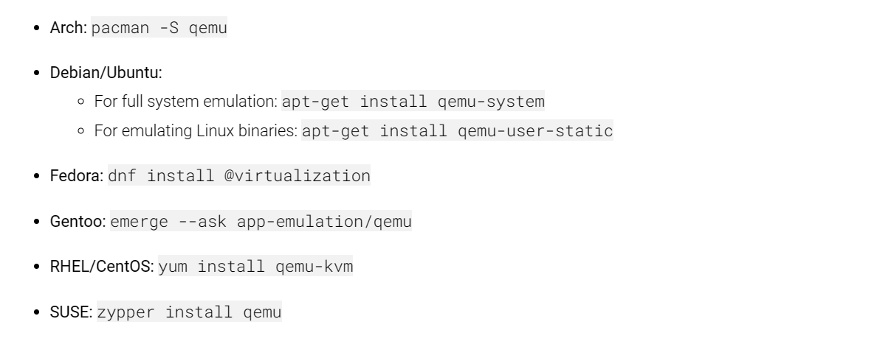
这里是截至到2023年10月15号，鄙人在Download QEMU - QEMU找到的instruction。我自己是为了节约时间，选择了：
sudo apt-get install qemu-system 安装结束后，当你尝试：
cd /yourpath/xv6-riscv
make qemu 意外发生：那就是一般而言，我们的电脑没有支持RISC-V指令集的GNU编译工具链，所以——
apt search binutils |grep binutils-riscv64 一下找到3个：（笔者这里已经安装结束，故给出【已安装】提示）
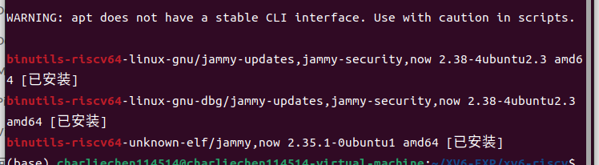
sudo apt install binutils-riscv64-linux-gnu
sudo apt install binutils-riscv64-linux-gnu-dbg
sudo apt install binutils-riscv64-unknown-elf 以及在这后：还会存在一个报错，那就是没有RISC-V指令集的GCC编译器：
sudo apt install gcc-10-riscv64-linux-gnu
cd /usr/bin # 懒癌是这样的
sudo ln -s riscv64-linux-gnu-gcc-10 riscv64-unknown-elf-gcc # 现在，我们就软链接了riscv64-unknown-elf-gcc，不出意外的话，不会报错了
make qemu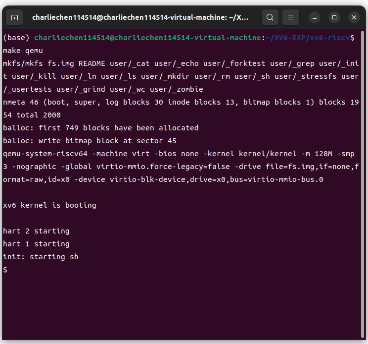
结束。
热身
我们来看看这些文件，他们可以在我们的Linux编程底下同样的可以使用之：举个例子。
TASK: 利用xv6下的kernel, user文件夹下的函数，构建一个copy.c，当我们保证在64个字节大小的最大输入范围下，实现echo功能：（提示：在UNIX操作系统中，往往会选择0作为程序标准输入流，1作为程序标准输出流，当然这不一定）
// copy.c: copy the stdin to the stdout
#include "../kernel/types.h"
#include "../user/user.h"
int main()
{
char buf[64];
while(1){
int n = read(0, buf, 64);
// get less or none bins, quit then
if(n <= 0)
break;
// else output to the shell
write(1, buf, n); // must be n, as a param to discribe
// how much letter should be written
}
exit(0);
} 我们手撸一个Cmake让他跑起来：
# this build files try to use the kernel written by
# MIT , kernel code is provided in https://github.com/mit-pdos/xv6-riscv
cmake_minimum_required(VERSION 3.20)
project(OSEXP VERSION 1.0)
add_executable(OSEXP copy.c)
target_include_directories(OSEXP PUBLIC ../kernel/ ../user/) 结果显然不错——就是有最大长度让人不太舒服
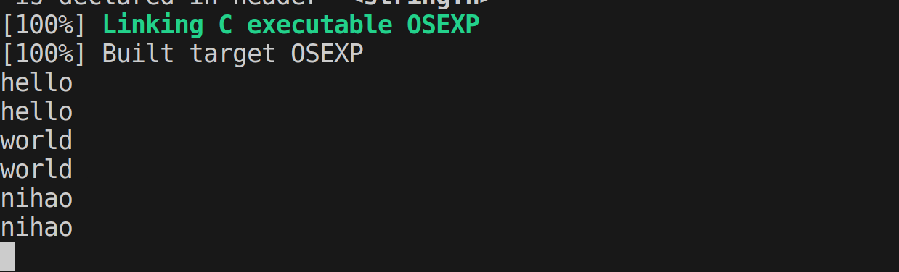
现在我们再看看这几行代码——
当我们引入头文件结束之后，我们程序进到程序入口Main这里，执行到：
char buf[64]; 我们在栈上开辟了64个字节大小的内存，
while(1){} 这里我们实现了除非接受到终止信号（Ctrl + C），程序将会永远运行下去， except for…埋伏笔
int n = read(0, buf, 64); 这里的read很朴实，先前的提示给过，结合POSIX标准（Portable Opreate System Interface of uniX），我们的read都统一的设定为这样的函数描述：
read(int from_where, void* what_buf, size_t bufSize); 只要提供给文件描述符（将这个分发的数字抽象成文件自身），数据块及其大小，就可以从标准输入流中读取数据了。读取的时候，可能会出现异常或者是没有输入（n <= 0）的情况，那就：
break; // Process get an error and it appears and is dealed in Software Level 否则，那就直接向标准输出，也就是我们的终端，返回我们刚刚送进去的一切。
Ｑ＆＆Ａ：如果我们发疯，我们明明只有64个bytes却让他读65个，会怎么样
答案是：UB，哈哈。可能是程序计数器的内容，或者是栈上其他的什么内容，参数。。。什么都可能是！总而言之，小心，再小心的设置边界参数，这里没人会帮助你检查的！
我们发现，对于操作系统和更底层的硬件来讲，他们丝毫不关心这些二进制流（一串有意义的01）意味着什么，如何解释是上面的事情，他们只是老实的搬运字节，设置字节等等。
TASK：尝试使用kernel,user, fcntl下的open和write函数打开文件并且进行读写。
#include "kernel/types.h"
#include "kernel/fcntl.h"
#include "user/user.h"
int main()
{
int fd = open("output.txt", O_CREATE | O_WRONLY);
write(fd, "Oh my Godness!\n", 16);
exit(0);
} 对了，这个时候就可以考虑不使用cmake了，我们可以把他放进qemu上实际跑一下。方法是：
把我们写的.c文件移至user文件夹下，修改Makefile文件的这些部分：
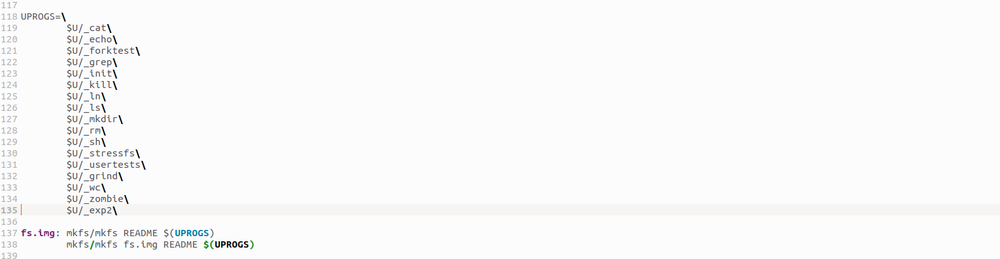
可以看到光标部分添加了一行
$U/_{srcname}\ 这里表示的就是把我们的用户代码添加进来的意思。现在，执行
make qemu 然后ls，发现系统内多存在了一个文件，那就是我们的exp2文件，运行之，啥现象没有！
exp2 但是再次ls，发现多出来我们的output.txt了，
$cat output.txt
>>> Oh my Godness!
$ 可以注意到：内核自己维护了一张表——他包含了每个进程中对不同文件的编号。所以，对于不同的进程，相同标号的文件有的时候可能是指向一个不一样的文件。只是恰巧文件编号相同了罢了
下面提到了shell，shell作为字符终端有着广泛的应用，在UNIX系统操作上，我们可以用之完成批处理等任务。或者是执行程序：
$ ls 我们发现程序被列出来了，它实际上是去枚举当前目录的文件，并且打印在终端上。shell还允许你重定向IO，换而言之，你可以将结果输出到其他地方
$ ls > out.txt
$ cat out.txt 发现跟终端输出完全一样
Q$$A 编译器如何处理对涉及到系统调用的代码？
答案是：事实上，我们需要调用系统调用的地方，本质上都是使用汇编写的（执行陷入指令），这里，在RISC-V下有一条汇编指令叫做ecall，他将程序的控制权转交内核。换而言之，这里实际上跳转进入的不是一个用C写的代码段，而使用特有的机器指令写的代码段。编译器只负责翻译添加将一些需要的参数传递进入需要的寄存器的指令就结束他的工作
TASK：尝试使用并发编程：fork()
#include"kernel/types.h"
#include"user/user.h"
int main()
{
int pid;
pid = fork();
printf("fork returns %d\n",pid);
if(pid == 0)
{
printf("Message from the child\n");
}
else
{
printf("Message from the parent\n");
}
exit(0);
}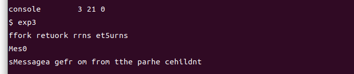
结果不太雅观——毕竟混在一起了。注意到，我们的fork是这样工作的
- 在主线程中，调用fork返回给自身的线程是一个大于0的整数
- 对于子线程则就是0，我们就是在代码里实现分支的控制的
- 出现乱码的原因是——他几乎是真正并发的输出内容
下面展示的是exec的作用：
#include "kernel/types.h"
#include "user/user.h"
int main()
{
char* argv[] = {"echo", "this", "is", "echo", 0};
exec("echo", argv);
printf("exec failed!\n");
exit(0);
}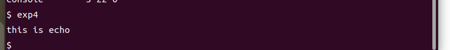
我们发现，程序被替换了！exp4在进程中被替换成了argv[0]的echo，换而言之，执行的是
echo this is echo 这个指令。exec的作用就是将将要执行的进程替换掉自身，然后执行那个替换的线程去，用新程序覆盖这个程序的上下文和内存空间
对了，最后的那个0，就是\0的意思，终止符。这是因为exec要用，要知道指令参数停在哪个位置。不然就会越界了！
所以shell是如何调用命令的呢？fork一个线程然后调用exec指令来开真正的新线程
#include "kernel/types.h"
#include "user/user.h"
int main()
{
int pid, status;
pid = fork();
if(pid == 0)
{
char* argv[] = {"echo", "THIS", "IS", "ECHO", 0};
exec("echo", argv);
printf("FAILED TO EXECUTE THE ECHO\n");
}else{
printf("parents are waiting\n");
wait(&status);
printf("Get the child process exits with the status:> %d", status);
}
exit(0);
}
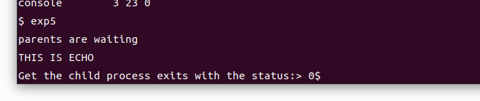
这里，如果子程序执行失败，就会把错误码1返回回来，他会交给主线程wait里，上报到操作系统提示出错了。UNIX中认为凡是退出码是0的都是正常退出的！
by the way，close这个函数指的是释放系统资源，这里指得就是文件描述符分配表，那些不close的文件会占着表资源不放，从而使后面的调用open的文件描述符返回的是下一个index。
现在，我们开始更多的讨论操作系统更加具体的特性
ISOLATION:隔离性
操作系统必须给每一个进程提供一个较为独立的环境。换而言之，就是相互之间不要相互影响。我们求解质数的程序不要去影响其他程序，操作系统应该可以正确的处理应用程序和应用程序之间，应用程序和系统程序之间的区别。
我们想一下：假使我们的CPU不支持系统层面的并发。那么，我们可能就会发现电脑变得很笨——他没办法同时运行多个程序。万一有一个程序，无意或者是有意的占据CPU很久，那么，电脑就会瘫痪。
操作系统有义务，在——无论是怎样的应用程序，都必须周期性的，强迫的扔下占为己有的CPU，然后切换到别的程序运行。这样，在高频率的CPU工作下，我们就会看到貌似所有的程序都在同时运行。
在空间上，如果我们不对之做虚拟的映射（操作系统预先的排布），可能就会出现两个程序互相侵占对方空间的情况——电脑开着开着就挂了！
UNIX提供了硬件的抽象。方法是我们只需要使用这些接口即可。让我们可以实现一种强隔离。我们的软件使用的是被抽象的CPU来完成工作。这样，操作系统实现了硬件复用功能。
Q&&A：我们的进程是不是实际上分用CPU，即：一个进程用CPU的一个部分，另一个进程使用另一部分。或者是对于多核系统则是使用不同的核？
是的，当我们运行大于核数量的进程时，则会在时间上分配时间片，换而言之，一个进程只能运行某个时间长度就会被停止换上另一个，随后在切换回来。好像他们在同时运行那样。
应用程序的进程是由text, global data等部分组成，他们共同访问抽象的内存，而不是直接访问物理的内存。操作系统提供了转换。
文件则是对磁盘块的抽象，正如同我们只能操作文件，而不是直接操纵磁盘空间。操作系统维护映射关系。防止磁盘块和磁盘块之间发生冲突，保证两者相互不干扰。
Q&&A：是否会有一个更复杂的内核试着重新调度同一个核的进程以减少缓存缺失
是的，存在缓存亲和性这个东西，操作系统尝试避免缓存缺失或者类似的事情来优化性能。
Q&&A：xv6中哪里可以查阅操作系统复用进程
proc.c文件。但是那是之后会详细展开。那是最接近的
操作系统必须具有防御性质的功能，换而言之，防止恶意程序毁坏系统并处理之，应用程序不应该打破隔离，而是在划定的范围内运作。
一个重要的假设就是：所有的应用程序都是有恶意的，这样就可以迫使我们设计的安全。
实现强隔离的方式之一就是硬件支持：这里有两种方法：
- 用户内核模式，也就是kernel模式。当然在RISC-V这又叫管理者模式，一回事情。
- 另一种是页表，虚拟内存
所有目前的处理器都支持这样的两个方式。
Kernel mode 内核模式
处理器支持两种模式：用户模式和内核模式。当处在内核模式的时候，CPU可以执行特权指令和非特权指令。而在用户模式则指可以执行非特权指令。
非特权指令包括add, sub ,mul等运算指令，或者是跳转流（jmp），或者是常见的分支结构等等。
特权指令则是引入直接硬件操作，包括直接配置页表寄存器，禁止时钟中断等跟硬件密切相关的指令。当用户想要直接运行特权指令，处理器不会执行。除非向操作系统申请并且同意。
Q&&A：如何判断当下的处理器处于的是内核模式还是用户模式?
存在硬件支持! 处理器有一个Flag寄存器,其中有一位标志位记录之:用户模式是1,内核模式是0(一般而言).所以当处理器解码指令的时候就会检查操作码.当发现此位是1而却要执行特权指令,就会发出拒绝的信号.
当然RISC-V还有第三种:机器模式,但是这里先不展开
Q&&A 用户可以直接绕过操作系统嘛?
额,一般不能.
Q&&A BIOS呢?
答案是,计算机执行的第一段代码就是跟BIOS相关的,他指引着操作系统的位置.一般而言,这段代码被写入专门的BIOS芯片,作只读处理(ROM), 所以一般认为是没有恶意的!
Q&&A：那既然设置为特权位这个指令就是一个特权指令,用户程序如何满足自己需要特权指令的需求呢?
中断:换而言之,交给操作系统判断是否可以执行,随后才会允许程序”内陷”到内核态工作.
Page Table页表
页表的工作就是将虚拟内存映射到真实的物理内存.其基本思想就是给每一个进程提供自己的页表,使用这个方式,进程只能访问它的页表显示的物理内存,这样只要设置页表的映射的物理内存相互不相交即可防止一个进程干涉另一个进程的物理内存.这样就提供了一个强隔离的物理内存布局.
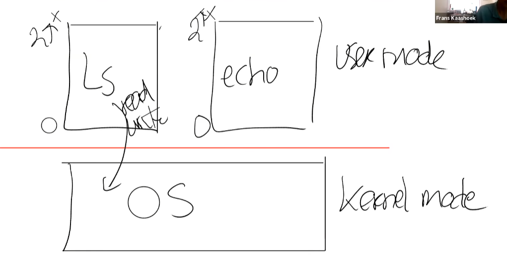
这里有一个进入内核方法:对于RISC-V,就是ecall指令
ecall <n> 这就是应用程序想要访问的系统调用的编号.进入内核的一个由内核控制的特动区域.如:调用fork,我们没有直接使用内核的fork,而是使用的系统调用编号, 如syscall,传递给a0,再去调用内核的fork.
Q&&A 内核在哪里决定程序可以调用特定的内核系统调用呢?
在内核侧, 我们的内核去检查是不是应用程序该工作的地方等等.
Q&&A 操作系统如何从程序那里夺回控制权
存在一个定时器,到点回收,然后分配给其他进程
Q&&A 为啥用C实现操作系统
人话: C语言容易控制硬件,很方便的语言.
TCB（trust computing base）可信任编程基础
必须正确，不能有bug，我们就是这样认为内核。内核必须假设应用程序是有恶意的，这样的思维就是安全思维。
内核根据代码量和管理的事情的多少分为宏内核和微内核。宏内核具有大量的代码，出现严重的bug的可能比较大。好的地方就是在于存在实现不同的子模块可以紧密联系带来很高的性能。比如说Linux。微内核则是可能的减少内核代码。总言之就是让bug总是在操作系统之外，但是性能会比较差，原因就是系统调用次数增加（如文件系统会频繁的调用内核）。
xv6是宏内核。下面简单说一下xv6文件构成。
结合上面所说的，我们的代码分为内核代码，用户代码：
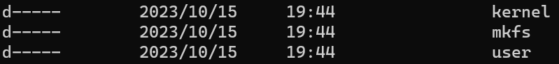
kernel下面有这样的一些文件：
Mode LastWriteTime Length Name
---- ------------- ------ ----
-a---- 2023/10/15 19:44 3478 bio.c
-a---- 2023/10/15 19:44 263 buf.h
-a---- 2023/10/15 19:44 3991 console.c
-a---- 2023/10/15 19:44 6315 defs.h
-a---- 2023/10/15 19:44 819 elf.h
-a---- 2023/10/15 19:44 624 entry.S
-a---- 2023/10/15 19:44 4089 exec.c
-a---- 2023/10/15 19:44 125 fcntl.h
-a---- 2023/10/15 19:44 3791 file.c
-a---- 2023/10/15 19:44 1039 file.h
-a---- 2023/10/15 19:44 17008 fs.c
-a---- 2023/10/15 19:44 1872 fs.h
-a---- 2023/10/15 19:44 1737 kalloc.c
-a---- 2023/10/15 19:44 908 kernel.ld
-a---- 2023/10/15 19:44 3087 kernelvec.S
-a---- 2023/10/15 19:44 5956 log.c
-a---- 2023/10/15 19:44 1277 main.c
-a---- 2023/10/15 19:44 2260 memlayout.h
-a---- 2023/10/15 19:44 764 param.h
-a---- 2023/10/15 19:44 2725 pipe.c
-a---- 2023/10/15 19:44 955 plic.c
-a---- 2023/10/15 19:44 2305 printf.c
-a---- 2023/10/15 19:44 15076 proc.c
-a---- 2023/10/15 19:44 3589 proc.h
-a---- 2023/10/15 19:44 988 ramdisk.c
-a---- 2023/10/15 19:44 7252 riscv.h
-a---- 2023/10/15 19:44 852 sleeplock.c
-a---- 2023/10/15 19:44 275 sleeplock.h
-a---- 2023/10/15 19:44 2747 spinlock.c
-a---- 2023/10/15 19:44 208 spinlock.h
-a---- 2023/10/15 19:44 2473 start.c
-a---- 2023/10/15 19:44 314 stat.h
-a---- 2023/10/15 19:44 1519 string.c
-a---- 2023/10/15 19:44 836 swtch.S
-a---- 2023/10/15 19:44 3616 syscall.c
-a---- 2023/10/15 19:44 507 syscall.h
-a---- 2023/10/15 19:44 8993 sysfile.c
-a---- 2023/10/15 19:44 1198 sysproc.c
-a---- 2023/10/15 19:44 3990 trampoline.S
-a---- 2023/10/15 19:44 5576 trap.c
-a---- 2023/10/15 19:44 244 types.h
-a---- 2023/10/15 19:44 4876 uart.c
-a---- 2023/10/15 19:44 3582 virtio.h
-a---- 2023/10/15 19:44 8991 virtio_disk.c
-a---- 2023/10/15 19:44 10707 vm.c 用户代码如下
Mode LastWriteTime Length Name
---- ------------- ------ ----
-a---- 2023/10/15 19:44 659 cat.c
-a---- 2023/10/15 19:44 315 echo.c
-a---- 2023/10/15 19:44 808 forktest.c
-a---- 2023/10/15 19:44 2130 grep.c
-a---- 2023/10/15 19:44 8128 grind.c
-a---- 2023/10/15 19:44 1158 init.c
-a---- 2023/10/15 19:44 441 initcode.S
-a---- 2023/10/15 19:44 271 kill.c
-a---- 2023/10/15 19:44 302 ln.c
-a---- 2023/10/15 19:44 1646 ls.c
-a---- 2023/10/15 19:44 373 mkdir.c
-a---- 2023/10/15 19:44 2113 printf.c
-a---- 2023/10/15 19:44 368 rm.c
-a---- 2023/10/15 19:44 8830 sh.c
-a---- 2023/10/15 19:44 1103 stressfs.c
-a---- 2023/10/15 19:44 2017 ulib.c
-a---- 2023/10/15 19:44 1768 umalloc.c
-a---- 2023/10/15 19:44 1072 user.h
-a---- 2023/10/15 19:44 632 user.ld
-a---- 2023/10/15 19:44 64992 usertests.c
-a---- 2023/10/15 19:44 688 usys.pl
-a---- 2023/10/15 19:44 888 wc.c
-a---- 2023/10/15 19:44 248 zombie.c 至于mkfs就是make file system的意思，我们每次编译运行的时候都会生成一个空的镜像文件系统文件
Mode LastWriteTime Length Name
---- ------------- ------ ----
-a---- 2023/10/15 19:44 6610 mkfs.c 编译是这样的：proc.c被GCC编译成proc.S在被汇编器编译成二进制文件。其他同理
QEMU是如何模拟RISC-V的呢？答案是，使用C模拟，使用
for(;;){
read_instructions;
decode_instructions;
execute_instructions;
} 就是这样。模拟一切特权和非特权指令。
我们下面尝试一下使用gdb调试，我们后面会通过这样的方式来查阅运行时发生了什么。
我们这里使用的是通用的riscv64-unknown-elf-gdb，这里给出安装方式
sudo apt-get install libncurses5-dev python2 python2-dev texinfo libreadline-dev
# 从清华大学开源镜像站下载gdb源码(约23MB)
wget https://mirrors.tuna.tsinghua.edu.cn/gnu/gdb/gdb-13.1.tar.xz
# 解压gdb源码压缩包
tar -xvf gdb-13.1.tar.xz
# 进入gdb源码目录
cd gdb-13.1
mkdir build && cd build
# 配置编译选项，这里只编译riscv64-unknown-elf一个目标文件
../configure --prefix=/usr/local --target=riscv64-unknown-elf --enable-tui=yes
# 在上面一行编译配置选项中，很多其他的文章会配置一个python选项
# 但我在尝试中发现配置了python选项后后面的编译过程会报错，不添加python选项则没有问题
# 开始编译，这里编译可能消耗较长时间，具体时长取决于机器性能
make -j$(nproc)
# 编译完成后进行安装
sudo make install# 测试一下是否安装成功
riscv64-unknown-elf-gdb -v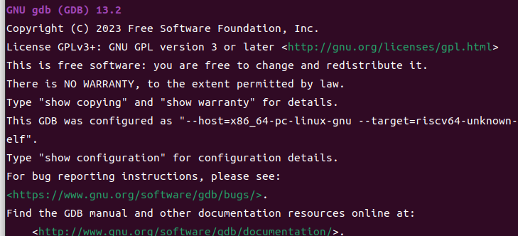
对了，这里需要：
To enable execution of this file add
add-auto-load-safe-path /home/charliechen114514/.config/gdb/.gdbinit
line to your configuration file "/home/charliechen114514/.config/gdb/gdbinit". 这样的输出，注意，这里结合自己的位置和文件添加对应的add-auto-load-safe-path。
下面，就可以开始调试了：在我们的xv6源码顶层目录，也就是我们先前输入make qemu的那一层目录下，这次我们输入
make CPUS=1 qemu-gdb 新开一个终端，我们可以直接在同级目录下：
riscv64-unknown-elf-gdb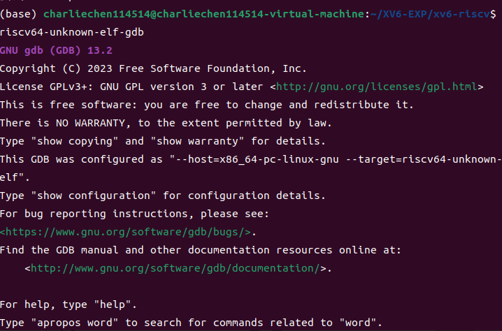
然后你会发现，gdb就会等待你的输入，我们为了研究程序如何进入enrty，打一个断点
源汇编程序：
0000000080000000 <_entry>:
80000000: 00009117 auipc sp,0x9
80000004: 89013103 ld sp,-1904(sp) # 80008890 <_GLOBAL_OFFSET_TABLE_+0x8>
80000008: 6505 lui a0,0x1
8000000a: f14025f3 csrr a1,mhartid
8000000e: 0585 addi a1,a1,1
80000010: 02b50533 mul a0,a0,a1
80000014: 912a add sp,sp,a0
80000016: 078000ef jal ra,8000008e <start> 打上：
b _entry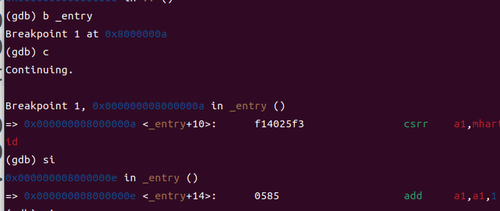
断点成功，输入c就会运行到_entry上，si表示的是执行下一条指令。
我们的机器现在在机器模式，马上他就会在内核模式，打一个断点在main那里：
b main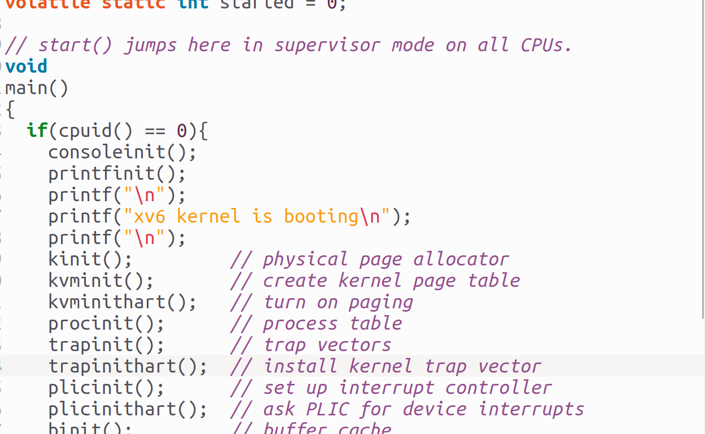
我们的机器就会停在这里
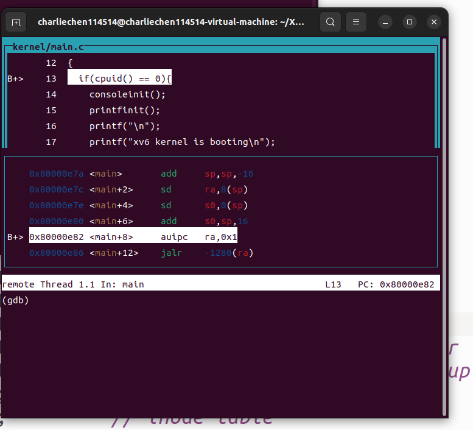
输入layout split获得上面那样的界面，输入n来让自己一步走一个C语言代码
consoleinit();
printfinit();
printf("\n");
printf("xv6 kernel is booting\n");
printf("\n");
kinit(); // physical page allocator
kvminit(); // create kernel page table
kvminithart(); // turn on paging
procinit(); // process table
trapinit(); // trap vectors
trapinithart(); // install kernel trap vector
plicinit(); // set up interrupt controller
plicinithart(); // ask PLIC for device interrupts
binit(); // buffer cache
iinit(); // inode table
fileinit(); // file table
virtio_disk_init(); // emulated hard disk
userinit(); // first user process
__sync_synchronize();
started = 1; 然后就开始我们的第一个进程了
Page Tables and Virtual Memory
我们知道虚拟内存是指使用一系列方式将之映射至物理地址。我们的这一映射实现了物理内存的隔离，很简单，只需要保证段基址的映射是互斥的即可！
我们只需要正确的设置页表就可以实现进程的强隔离。这样就可以有效的防止进程之间的干扰。举个例子，我们在执行一个A(ADR 3000-4000)程序的时候，代码中可能有一段：
ld ax, 1000
sd $7, (ax) 坏了，一下子写如其他程序去了。这下怎么办？
办法1：使用地址空间(Address space)：我们给每个进程都独立的分配一段空间。他们是从0开始到某一个大小…
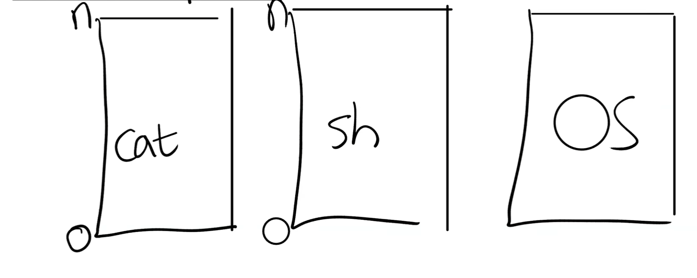
ld ax, 1000
sd $7, (ax) 我们让之变成自己空间的1000，然后在映射到真实的物理地址上去。
Q&&A:在物理空间上就有有限的空间，我们是否需要设置虚拟空间的最大值？
答案是，不需要，两者没有直接的关系！
Q&&A:当我们的机器上运行了过多的程序的时候，是不是意味着物理空间还是会被耗尽，尽管虚拟空间可以满足之
是的，我们的进程会去分配一个大的页表。事实上，再Lab2的查询当前空余空间的时候，我们看到了kalloc函数就会检查进程的页表，对于存在合适大小的空间时则会返回这个空间的地址，若是没有，则会返回空指针。
如何实现单个物理内存的复用呢？答案就是使用页表。这是硬件支持的，由处理器或内存管理单元支持的。CPU执行的任何指令，如
$d $7, (a0) 这里我们使用的任何地址都是虚拟地址，这些虚拟地址在送往IP寻址的时候总是会先经过MMU转换得到真实的地址才会进一步处理。
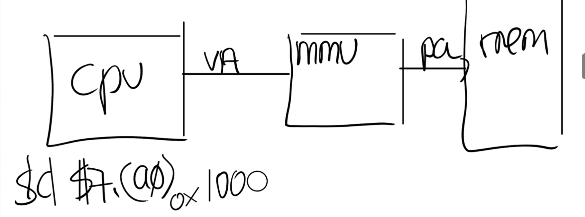
页表这样的映射会存在内存当中，CPU也会由一些内存指出物理地址的页表在哪里，从而方便查找。CPU会告诉MMU这样的页表在哪里（SATP寄存器）。
Q&&A:MMU只是做转换但是不会做保存吗
对，只是这样
每个应用程序都会拥有自己的页表，当我们执行一个应用程序的时候，SATP就会指向这个进程的页表，也就是说，cat, shell等程序的页表会在他们执行的时候被加载。
Q&&A: SATP这个寄存器应当是写在内核的，对吗？
正确的，只有内核特权级的代码才有权力改变他。用户程序不可以，因为这样会违反操作系统的隔离性。写入或者是读取SATP是一个特权指令
结合地址寄存器是64位的（我们在讨论64位的操作系统！），显然，我们可以有{2^64}个地址，那么，假使我们是对每一个字节进行映射。。。嘿！那太荒唐了，这个表自身就要至少跟系统的内存一样大！所以事情不应该是这样的。答案是——不是对字节进行映射而是对页表
我们将连续的一系列内存打包，给他们赋予一个页的称号。在RISC-V下，一个页4KB，也就是4096个字节。几乎所有的寄存器都是支持这样的页大小。现在，我们可以将虚拟地址表示两个部分组成的量——一个是页表号（Index），另一个就是Offset，换而言之就是页表内部的偏移。不过可以注意的是，CPU自身使用的虚拟地址位数只有39位，也就是大概512GB。而对于使用真实的物理地址的寄存器也只会使用56位，12位描述段偏移（Offset, 2^12 = 4096B = 4KB），44位则是存储页标号
在这个设计中虚拟内存和物理内存的位数是不一样的，虚拟内存是39位，前27位映射物理页面，后12位表示页面偏移，而物理内存是56位，前44位表示页面，后12位表示偏移
但是,使用单机页表,页表还是会很大, 每一个进程都会持有一个巨大的页表,那么,我们就继续贯彻这一使用映射表的原则,进行多级页表的处理
下面我们来看看最后的十个位:
V:Valid,当这一位被设置的时候,就会说明这个PTE(Page Table Entry)是可以使用的,我们可以使用它来进行转换,如果是0,那就会告知之没有必要继续使用这个PTE,也就是说这个页表是被废弃的.
R与W:分别描述了这个页表是否可以书写或者是看这个页表可不可以读取
Q&&A:三级页表是如何工作的,他如何取到实际物理地址
逐步追寻PPN指向的页表然后查找到最终的44位实际物理地址.
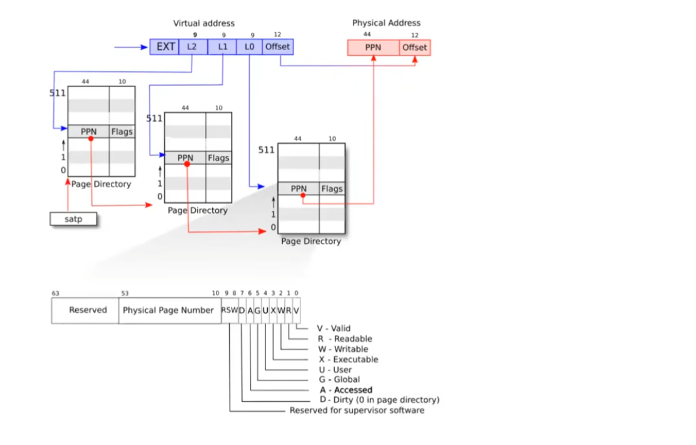
重新阐述一下他是如何工作的:我们首先查找到虚拟地址,将之划分为9,9,9,12,其他位.9,9,9代表了页表在哪里,第一个页表,也就是顶级的页表由SATP寄存器指出,L2只是告知PPN,这个PPN描述了下一级的页表的地址,至于下一级页表的Index还是由虚拟地址给出.直到我们到达了最低层的页表,他直接描述了我们的物理地址.我们就这样减少了页表的内存大小,后面的OFFSET在这里全部置0了,这就告诉我们页表的物理地址是4K对齐的,他总是4K的倍数
如果硬件发现页表中的映射存在问题则会返回一个页表错误(page fault),操作系统会更新页表然后重新加载页表.
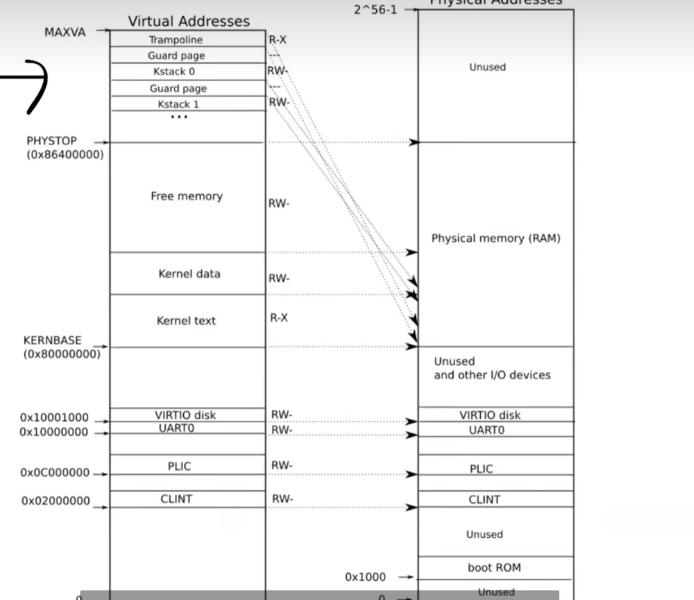
Q&&A:我们的MMU在看到虚拟内存是0x8000以下的未知的时候就会映射到IO设备,以上的话就会映射到本地DRAM是吗?
是的!
回到主线,我们看到内核栈上的一些映射很高,这是因为内核栈有一个没有映射的守护页(Gaurd Page)在下面.如果发生栈溢出了(内核栈冲破了PHYSTOP,GAURD PAGE的VA将会送到MMU，从而引发页错误，迫使操作系统检查栈溢出的问题．)
页表的映射可以是一对一,一对多以及多对多的.这很有趣
补充:每一个进程都会由一个内核栈
我们来看看kvminit(kernel - virtual - memory - init )上一次我们看了boot的流程，我们跟到了main函数。main函数中调用的一个函数是kvminit（3.9），这个函数会设置好kernel的地址空间。kvminit的代码如下：
void
kvminit()
{
kernel_pagetable = (pagetable_t) kalloc();
memset(kernel_pagetable, 0, PGSIZE);
// uart registers
kvmmap(UART0, UART0, PGSIZE, PTE_R | PTE_W);
// virtio mmio disk interface
kvmmap(VIRTIO0, VIRTIO0, PGSIZE, PTE_R | PTE_W);
// CLINT
kvmmap(CLINT, CLINT, 0x10000, PTE_R | PTE_W);
// PLIC
kvmmap(PLIC, PLIC, 0x400000, PTE_R | PTE_W);
// map kernel text executable and read-only.
kvmmap(KERNBASE, KERNBASE, (uint64)etext-KERNBASE, PTE_R | PTE_X);
// map kernel data and the physical RAM we'll make use of.
kvmmap((uint64)etext, (uint64)etext, PHYSTOP-(uint64)etext, PTE_R | PTE_W);
// map the trampoline for trap entry/exit to
// the highest virtual address in the kernel.
kvmmap(TRAMPOLINE, (uint64)trampoline, PGSIZE, PTE_R | PTE_X);
} 我们在前一部分看了kernel的地址空间长成什么样，这里我们来看一下代码是如何将它设置好的。首先在kvminit中设置一个断点，之后运行代码到断点位置。在gdb中执行layout split，可以看到（从上面的代码也可以看出）函数的第一步是为最高一级page directory分配物理page（注，调用kalloc就是分配物理page）。下一行将这段内存初始化为0。
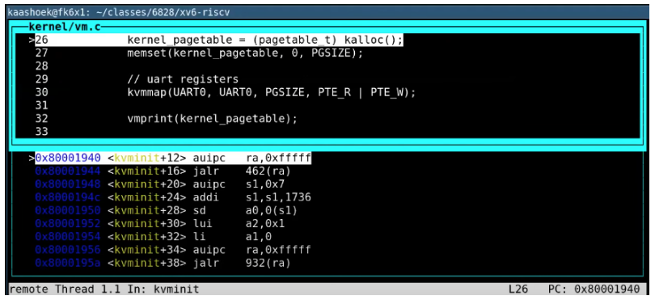
之后，通过kvmmap函数，将每一个I/O设备映射到内核。例如，下图中高亮的行将UART0映射到内核的地址空间。
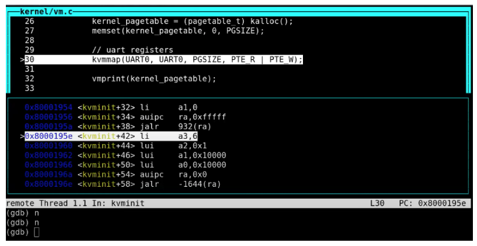
我们可以查看一个文件叫做memlayout.h，它将4.5中的文档翻译成了一堆常量。在这个文件里面可以看到，UART0对应了地址0x10000000（注，4.5中的文档是真正SiFive RISC-V的文档，而下图是QEMU的地址，所以4.5中的文档地址与这里的不符）。
/ Physical memory layout
// qemu -machine virt is set up like this,
// based on qemu's hw/riscv/virt.c:
//
// 00001000 -- boot ROM, provided by qemu
// 02000000 -- CLINT
// 0C000000 -- PLIC
// 10000000 -- uart0
// 10001000 -- virtio disk
// 80000000 -- boot ROM jumps here in machine mode
// -kernel loads the kernel here
// unused RAM after 80000000.
// the kernel uses physical memory thus:
// 80000000 -- entry.S, then kernel text and data
// end -- start of kernel page allocation area
// PHYSTOP -- end RAM used by the kernel
// qemu puts UART registers here in physical memory.
#define UART0 0x10000000L
#define UART0_IRQ 10
// virtio mmio interface
#define VIRTIO0 0x10001000
#define VIRTIO0_IRQ 1
// local interrupt controller, which contains the timer.
#define CLINT 0x2000000L
#define CLINT_MTIMECMP(hartid) (CLINT + 0x4000 + 8*(hartid))
#define CLINT_MTIME (CLINT + 0xBFF8) // cycles since boot.
// qemu puts programmable interrupt controller here.
#define PLIC 0x0c000000L
#define PLIC_PRIORITY (PLIC + 0x0)
#define PLIC_PENDING (PLIC + 0x1000)
#define PLIC_MENABLE(hart) (PLIC + 0x2000 + (hart)*0x100)
#define PLIC_SENABLE(hart) (PLIC + 0x2080 + (hart)*0x100)
#define PLIC_MPRIORITY(hart) (PLIC + 0x200000 + (hart)*0x2000)
#define PLIC_SPRIORITY(hart) (PLIC + 0x201000 + (hart)*0x2000)
#define PLIC_MCLAIM(hart) (PLIC + 0x200004 + (hart)*0x2000)
#define PLIC_SCLAIM(hart) (PLIC + 0x201004 + (hart)*0x2000)
// the kernel expects there to be RAM
// for use by the kernel and user pages
// from physical address 0x80000000 to PHYSTOP.
#define KERNBASE 0x80000000L
#define PHYSTOP (KERNBASE + 128*1024*1024)
// map the trampoline page to the highest address,
// in both user and kernel space.
#define TRAMPOLINE (MAXVA - PGSIZE)
// map kernel stacks beneath the trampoline,
// each surrounded by invalid guard pages.
#define KSTACK(p) (TRAMPOLINE - ((p)+1)* 2*PGSIZE)
// User memory layout.
// Address zero first:
// text
// original data and bss
// fixed-size stack
// expandable heap
// ...
// TRAPFRAME (p->trapframe, used by the trampoline)
// TRAMPOLINE (the same page as in the kernel)
#define TRAPFRAME (TRAMPOLINE - PGSIZE)所以，通过kvmmap可以将物理地址映射到相同的虚拟地址（注，因为kvmmap的前两个参数一致）。
在page table实验中，第一个练习是实现vmprint，这个函数会打印当前的kernel page table。我们现在跳过这个函数，看一下执行完第一个kvmmap时的kernel page table。
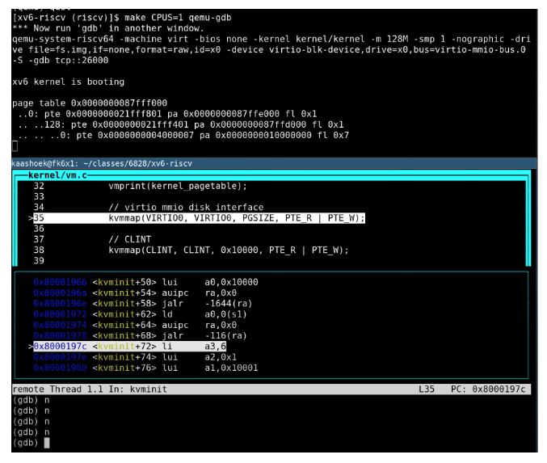
我们来看一下这里的输出。第一行是最高一级page directory的地址，这就是存在SATP或者将会存在SATP中的地址。第二行可以看到最高一级page directory只有一条PTE序号为0，它包含了中间级page directory的物理地址。第三行可以看到中间级的page directory只有一条PTE序号为128，它指向了最低级page directory的物理地址。第四行可以看到最低级的page directory包含了PTE指向物理地址。你们可以看到最低一级 page directory中PTE的物理地址就是0x10000000，对应了UART0。
前面是物理地址，我们可以从虚拟地址的角度来验证这里符合预期。我们将地址0x10000000向右移位12bit，这样可以得到虚拟地址的高27bit（index部分）。之后我们再对这部分右移位9bit，并打印成10进制数，可以得到128，这就是中间级page directory中PTE的序号。这与之前（4.4）介绍的内容是符合的。

从标志位来看（fl部分），最低一级page directory中的PTE有读写标志位，并且Valid标志位也设置了（4.3底部有标志位的介绍）。
内核会持续的按照这种方式，调用kvmmap来设置地址空间。之后会对VIRTIO0、CLINT、PLIC、kernel text、kernel data、最后是TRAMPOLINE进行地址映射。最后我们还会调用vmprint打印完整的kernel page directory，可以看出已经设置了很多PTE。
光速复习
C是如何转化为汇编语言的呢？
C一般会有main函数，还会有其他的函数等等，但是事实上CPU根本不理解这些东西，这中间需要编译器，汇编器帮助我们转化为机器语言。这些机器语言需要匹配不同机器上的ISA（指令集）。C经过编译器成为汇编语言，然后经过汇编器成为二进制文件，这些是处理器真正可以理解的文件。
我们目前研究的RISC-V跟市面上常见的x86-64不太一样，后者属于CISC指令集，而且指令很复杂而又庞大。
回到正题，当我们去查看编译器编译的代码会发现之面目全非，只是因为这里实行了大量的优化
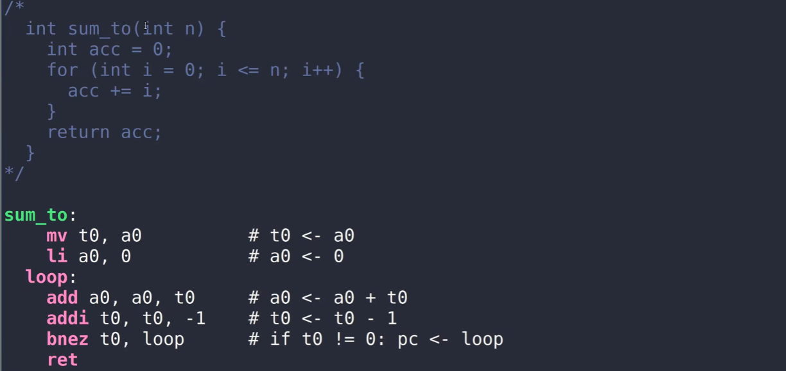
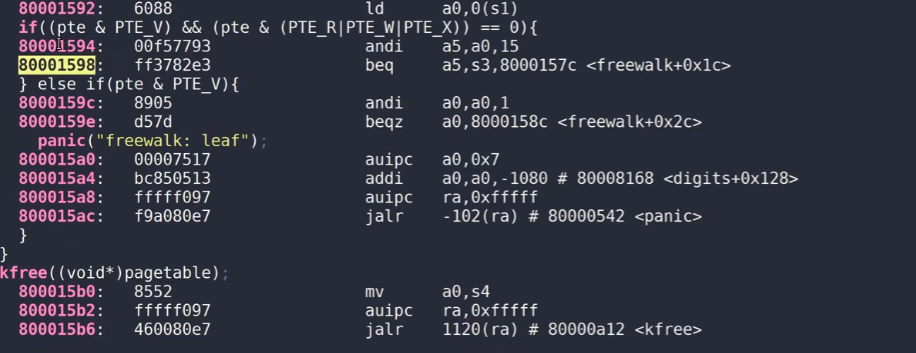
我们查阅汇编文件，会发现一行行的是这样构成的，第一列是一串数字，它实际上是地址，标志着这个指令在内存中的位置，后面的就是实际的汇编代码。
一、简介
通过gdb调试我们可以监控程序执行的每一个细节，包括变量的值、函数的调用过程、内存中数据、线程的调度等，从而发现隐藏的错误或者低效的代码，程序的调试过程主要有：单步执行，跳入函数，跳出函数，设置断点，设置观察点，查看变量。
本文将主要介绍linux下的gdb调试工具常用的命令和具体的使用实例。
二、调试过程介绍
2.1 编译程序加参数时生成调试信息
-g 和 -ggdb 都是令 gcc 生成调试信息，但是它们也是有区别的
| 选项 | 解析 |
|---|---|
| g | 该选项可以利用操作系统的“原生格式（native format）”生成调试信息。GDB 可以直接利用这个信息，其它调试器也可以使用这个调试信息 |
| ggdb | 使 GCC为GDB 生成专用的更为丰富的调试信息，但是，此时就不能用其他的调试器来进行调试了 (如 ddx) |
-g也是分级别的
| 选项 | 解析 |
|---|---|
| g1 | 级别1（-g1）不包含局部变量和与行号有关的调试信息，因此只能够用于回溯跟踪和堆栈转储之用。回溯跟踪指的是监视程序在运行过程中的函数调用历史，堆栈转储则是一种以原始的十六进制格式保存程序执行环境的方法，两者都是经常用到的调试手段 |
| g2 | 这是默认的级别，此时产生的调试信息包括扩展的符号表、行号、局部或外部变量信息 |
| g3 | 包含级别2中的所有调试信息，以及源代码中定义的宏 |
2.2 gdb调试常用命令解析
| 命令 | 解析 |
|---|---|
| file [filename] | 装入想要调试的可执行文件 |
| kill [filename] | 终止正在调试的程序 |
| break [file:]function | 在(file文件的)function函数中设置一个断点 |
| clear | 删除一个断点，这个命令需要指定代码行或者函数名作为参数 |
| run [arglist] | 运行您的程序 (如果指定了arglist,则将arglist作为参数运行程序) |
| bt Backtrace: | 显示程序堆栈信息 |
| print expr | 打印表达式的值 |
| continue | 继续运行您的程序 (在停止之后，比如在一个断点之后) |
| list | 列出产生执行文件的源代码的一部分 |
| next | 单步执行 (在停止之后); 跳过函数调用 |
| nexti | 执行下一行的源代码中的一条汇编指令 |
| set | 设置变量的值。例如：set nval=54 将把54保存到nval变量中 |
| step | 单步执行 (在停止之后); 进入函数调用 |
| stepi | 继续执行程序下一行源代码中的汇编指令。如果是函数调用，这个命令将进入函数的内部，单步执行函数中的汇编代码 |
| watch | 使你能监视一个变量的值而不管它何时被改变 |
| rwatch | 指定一个变量，如果这个变量被读，则暂停程序运行，在调试器中显示信息，并等待下一个调试命令。参考rwatch和watch命令 |
| awatch | 指定一个变量，如果这个变量被读或者被写，则暂停程序运行，在调试器中显示信息，并等待下一个调试命令。参考rwatch和watch命令 |
| Ctrl-C | 在当前位置停止执行正在执行的程序，断点在当前行 |
| disable | 禁止断点功能，这个命令需要禁止的断点在断点列表索引值作为参数 |
| display | 在断点的停止的地方，显示指定的表达式的值。(显示变量) |
| undisplay | 删除一个display设置的变量显示。这个命令需要将display list中的索引做参数 |
| enable | 允许断点功能，这个命令需要允许的断点在断点列表索引值作为参数 |
| finish | 继续执行，直到当前函数返回 |
| ignore | 忽略某个断点制定的次数。例：ignore 4 23 忽略断点4的23次运行，在第24次的时候中断 |
| info [name] | 查看name信息 |
| load | 动态载入一个可执行文件到调试器 |
| xbreak | 在当前函数的退出的点上设置一个断点 |
| whatis | 显示变量的值和类型 |
| ptype | 显示变量的类型 |
| return | 强制从当前函数返回 |
| txbreak | 在当前函数的退出的点上设置一个临时的断点(只可使用一次) |
| make | 使你能不退出 gdb 就可以重新产生可执行文件 |
| shell | 使你能不离开 gdb 就执行 UNIX shell 命令 |
| help [name] | 显示GDB命令的信息，或者显示如何使用GDB的总体信息 |
| quit | 退出gdb |
2.3 gdb调试常用参数解析
| 参数 | 解析 |
|---|---|
| -e | 指定可执行文件名 |
| -c | 指定coredump文件 |
| -d | 指定目录加入到源文件搜索路径 |
| –cd | 指定目录作为路径运行gdb |
| -s | 指定文件读取符号表 |
| -p | 指定attach进程 |
三、具体调试示例讲解
3.1 调试已运行的进程
(gdb) gdb -p 进程名 //对指定进程进行调试
(gdb) gdb attach 进程名3.2 调试线程
(gdb) info thread //调试已运行的进程下再列出线程
(gdb) thread 线程号 //切换至线程3.3 查看相关信息
(gdb) info thread //列出线程
(gdb) info register //列出寄存器
(gdb) info frame //列出栈帧
(gdb) info files //列出当前文件
(gdb) info share //列出当前共享库3.4 修改程序执行相关参数
1、程序运行参数
set args 可指定运行时参数。如：
(gdb)set args 10 20 30 40 50
(gdb)show args 命令可以查看设置好的运行参数。2、其他参数
| 参数 | 描述 |
|---|---|
| path | 可设定程序的运行路径 |
| show paths | 查看程序的运行路径 |
| set environment varname [=value] | 设置环境变量。如：set env USER=hchen |
| show environment [varname] | 查看环境变量 |
| show language | 查看当前的语言环境。如果GDB不能识为你所调试的编程语言，那么，C语言被认为是默认的环境。 |
| info frame | 查看当前函数的程序语言。 |
| info source | 查看当前文件的程序语言。 |
| info breakpoints | 显示所有断点 |
| info terminal | 显示程序用到的终端的模式 |
3.5 常用的调试步骤
1、断点的添加
使用break 或者b命令
| 命令 | 解析 |
|---|---|
| break function | 在进入指定函数时停住 |
| break n | 在指定行号停住，如(gdb) break 46 |
| break +offset或break -offset | 在当前行号的前面或后面的offset行停住。offiset为自然数。 |
| break filename:linenum | 在源文件filename的linenum行处停住。 |
| break filename:function | 在源文件filename的function函数的入口处停住。 |
| break *address | 在程序运行的内存地址处停住。 |
| break | break命令没有参数时，表示在下一条指令处停住。 |
2、断点的删除
| 命令 | 解析 |
|---|---|
| 删除n号断点 | (gdb) delete n |
| 删除所有断点 | (gdb) delete |
| 清除行n上面的所有断点 | (gdb) clear n |
3、程序运行进度调试
（1）连续执行程序，直到遇到断点
(gdb)run|r（2）继续执行程序，直到下个断点
(gdb) continue|c（3）执行下一行语句
(gdb)next|n（4）单步进入
(gdb) step|s这样，也会执行一行代码，不过如果遇到函数的话就会进入函数的内部，再一行一行的执行。执行完当前函数返回到调用它的函数
（5）跳出当前函数
(gdb) finish 这里，运行程序，直到当前函数运行完毕返回再停止。例如进入的单步执行如果已经进入了某函数，可以退出该函数返回到它的调用函数中
（6）跳转指令
(gdb) jump location //指定下一条语句的运行点。可以是文件的行号，可以是file:line格式，可以是+num这种偏移量格式。表式着下一条运行语句位置4、打印程序相关信息
（1） print 命令
输出或者修改指定变量或者表达式的值
(gdb) print num
(gdb) p num
(gdb) print file::variable
(gdb) print function::variable其中 file用于指定具体的文件名，funciton 用于指定具体所在函数的函数名，variable表示要查看的目标变量或表达式。
另外，print也可以打印出类或者结构体变量的值。
（2）打印数组
查看一段连续的内存空间的值。比如数组的一段，或是动态分配的数据的大小。你可以使用GDB的“@”操作符，“@”的左边是第一个内存的地址的值，“@”的右边则你你想查看内存的长度。例如，你的程序中有这样的语句：
int *array = (int *) malloc (len * sizeof (int)); 于是，在GDB调试过程中，你可以以如下命令显示出这个动态数组的取值：
(gdb) p *array@len @的左边是数组的首地址的值，也就是变量array所指向的内容，右边则是数据的长度，其
保存在变量len中，其输出结果，大约是下面这个样子的：
(gdb) p *array@len
$1 = {2, 4, 6, 8, 10, 12, 14, 16, 18, 20, 22, 24, 26, 28, 30, 32, 34, 36, 38, 40} 如果是静态数组的话，可以直接用print数组名，就可以显示数组中所有数据的内容了
（3）源代码显示
| 命令 | 解析 |
|---|---|
| list n | 显示程序第n行的周围的源程序。 |
| list function | 显示函数名为function的函数的源程序。 |
| list +n | 显示当前行n后面的源程序。 |
| list -n | 显示当前行n前面的源程序。 |
| set listsize | 设置一次显示源代码的行数。 |
| show listsize | 查看当前listsize的设置。 |
（4）查看源代码的内存地址
你可以使用info line命令来查看源代码在内存中的地址。info line后面可以跟“行号”，“函
数名”，“文件名:行号”，“文件名:函数名”，这个命令会打印出所指定的源码在运行时的内
存地址，如：
(gdb) info line tst.c:func
Line 5 of "tst.c" starts at address 0x8048456 and ends at 0x804845d . 还有一个命令（disassemble）你可以查看源程序的当前执行时的机器码，这个命令会把目前
内存中的指令dump出来。
disassemble [Address]
(gdb) disassemble 0x00000000004008fd //反汇编包含给定地址的整个函数，包括其上方的指令。
disassemble [Start],[End]
(gdb) disassemble 0x000000000040068a,0x00000000004006ac // 指定要反汇编的起始地址和结束地址
disassemble [Function],+[Length]
(gdb) disassemble main, +10 //指定从给定地址或函数开始反汇编的字节数
12345678
disassemble /m [...]
指定此选项后，反汇编命令将显示与反汇编指令相对应的源代码行。例如：
(gdb) disassemble /m main
disassemble /r [...]
当指定此选项时，反汇编命令将显示所有反汇编指令的原始字节值。
(gdb) disassemble /r main（5）查看内存地址保存的值
你可以使用examine命令（简写是x）来查看内存地址中的值。x命令的语法如下所示：
(gdb) x/nfu addrn 是一个正整数，表示显示内存的长度，也就是说从当前地址向后显示几个地址的内容。
f 表示显示的格式，参见上面。如果地址所指的是字符串，那么格式可以是s，如果地十是
指令地址，那么格式可以是i。
u 表示从当前地址往后请求的字节数，如果不指定的话，GDB默认是4个bytes。u参数可
以用下面的字符来代替，b表示单字节，h表示双字节，w表示四字节，g表示八字节。当
我们指定了字节长度后，GDB会从指内存定的内存地址开始，读写指定字节，并把其当作
一个值取出来。
addr表示一个内存地址。
n/f/u三个参数可以一起使用。例如：
(gdb) x/3uh 0x54320 //从内存地址0x54320读取内容，h表示以双字节为一个单位，3表示三个单位，u表示按十六进制显示。（6）查看寄存器
要查看寄存器的值，很简单，可以使用如下命令：
(gdb) info registers 查看寄存器的情况。（除了浮点寄存器）
(gdb) info all-registers 查看所有寄存器的情况。（包括浮点寄存器）
寄存器中放置了程序运行时的数据，比如程序当前运行的指令地址（ip），程序的当前堆栈
地址（sp）等等。你同样可以使用print命令来访问寄存器的情况，只需要在寄存器名字前
加一个$符号就可以了。如：p $eip。
（7）显示当前调用函数堆栈中的函数
(gdb) backtrace [-full] [n]
/*命令产生一张列表，包含着从最近的过程开始的所有有效过程和调用这些过程的参数。
n：一个整数值，当为正整数时，表示打印最里层的 n 个栈帧的信息；n为负整数时，那么表示打印最外层n个栈帧的信息；
-full：打印栈帧信息的同时，打印出局部变量的值
注意，当调试多线程程序时，该命令仅用于打印当前线程中所有栈帧的信息。
如果想要打印所有线程的栈帧信息，应执行thread apply all backtrace命令*/（8）frame 命令详解
frame 或 f 会打印出这些信息：栈的层编号，当前的函数名，函数参数值，函数所在文件及行号，函数执行到的语句。
查看当前栈帧中存储的信息
(gdb) info frame
Stack level 0, frame at 0x7ffc1da10e80:
rip = 0x7f800008b4e3 in __epoll_wait_nocancel; saved rip = 0x5560eac8b902
called by frame at 0x7ffc1da11280
Arglist at 0x7ffc1da10e70, args:
Locals at 0x7ffc1da10e70, Previous frame's sp is 0x7ffc1da10e80
Saved registers:
rip at 0x7ffc1da10e78该命令会依次打印出当前栈帧的如下信息：
1、当前栈帧的编号，以及栈帧的地址；
2、当前栈帧对应函数的存储地址，以及该函数被调用时的代码存储的地址
3、当前函数的调用者，对应的栈帧的地址；
4、编写此栈帧所用的编程语言；
5、函数参数的存储地址以及值；
6、函数中局部变量的存储地址；
7、栈帧中存储的寄存器变量，例如指令寄存器（64位环境中用 rip 表示，32为环境中用eip 表示）、
堆栈基指针寄存器（64位环境用 rbp表示，32位环境用 ebp表示）等。
4、gdb其他命令用法
（1）搜索源代码
不仅如此，GDB还提供了源代码搜索的命令：
(gdb) forward-search //向前面搜索。
(gdb) reverse-search //从当前行的开始向后搜索（2）设置观察点(WatchPoint)
观察点一般用来观察某个表达式(变量也是一种表达式)的值是否变化了。如果有变化，马上停住程序。有下面的几种方法来设置观察点：
watch 为表达式(变量)expr设置一个观察点。一旦表达式值有变化时，马上停住程序
(gdb) watch i != 10
//这里，i != 10这个表达式一旦变化，则停住。watch <expr> 为表达式（变量）expr设置一个观察点。一量表达式值有变化时，马上停住程序(也是一种断点)。 （3）设置捕捉点(CatchPoint)
可设置捕捉点来补捉程序运行时的一些事件。如载入共享库(动态链接库)或是C++的异常。设置捕捉点的格式为：
//catch 当event发生时，停住程序
(gdb) info catch
//打印出当前的函数中的异常处理信息。
(gdb) info locals
//打印出当前函数中所有局部变量及其值。 （4）强制调用函数
(gdb) call <expr>
/*这里,<expr>可以是一个函数，这样就会返回函数的返回值，如果函数的返回类型是void那么就不会打印函数的返回值,但是实践发现，函数运行过程中的打印语句还是没有被打印出来。
表达式中可以一是函数，以此达到强制调用函数的目的。并显示函数的返回值，如果函数返
回值是void，那么就不显示。*/另一个相似的命令也可以完成这一功能——print，print后面可以跟表达式，所以也可以用他
来调用函数，print和call的不同是，如果函数返回void，call则不显示，print则显示函数返
回值，并把该值存入历史数据中。
（5）终止一个正在调试的程序
(gdb) kill
//输入kill就会终止正在调试的程序了。注意：当调试完成后，如果想令当前程序进行执行，消除调试操作对它的影响，需手动将 GDB 调试器与程序分离，分离过程分为 2 步：
1、执行 detach 指令，使GDB调试器和程序分离；
2、执行 quit（或q）指令，退出GDB调试
关于RISC-V和汇编
下面这张表是寄存器表
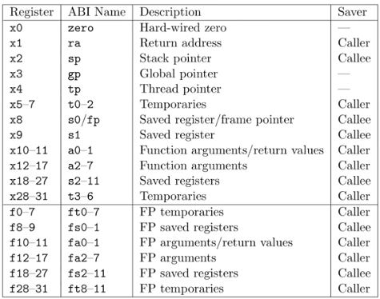
我们的汇编实际上都是在围绕着寄存器操作。
load类的指令可以加载值进入寄存器，store类指令则是可以将寄存器的结果存回地址的某一处或者是另一个寄存器。他是最快的存取数据的方法，这就是为什么我们一般喜欢操纵寄存器来处理。
寄存器分为caller和callee两种，调用者和被调用的寄存器，可以这样理解。caller 寄存器在函数调用期间会被覆盖，但是callee寄存器不会。比如说调用函数，返回地址等。当我们写函数的时候，我们需要使用caller寄存器取调用之，而对于那些保存别调用的寄存器我们需要想办法存留这些值
堆栈
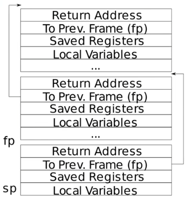
堆栈的存在让函数的调用正常工作，它允许函数调用和函数结束调用后返回上级。上面的这张图是堆栈的简化图
所以我们发现，那些不再继续调用函数的函数通常不会再使得栈帧增长，我们称呼之为叶子函数。
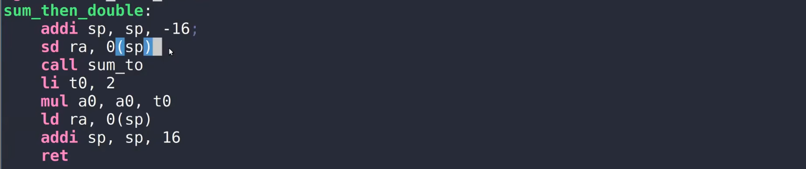
让我们看看，如果我们把保存函数栈帧和加载回栈帧的汇编代码删去了会如何
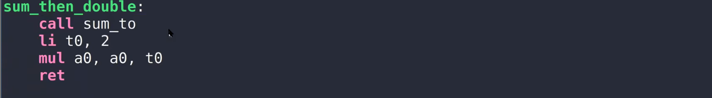
答案是无限循环调用，当我们加载到最后的函数调用地址后，函数执行完成走向ret，查看sp寄存器发现仍然是该函数的地址，所以进入后继续执行
我们这谈到的是陷入。他描述的是操作系统从用户模式切换到内核模式时候的行为。
寄存器分为通用寄存器和特殊寄存器，他们辅助着CPU的工作。比如说，SATP（Supervisor Address Translation and Protection (SATP) register，STVEC（Supervisor Trap Vector base address register），他处理着内核当中的trap指令。SEPC寄存器（Supervisor Exception Pragram Counter）处理在trap期间保存程序计数器。Sscratc（Supervisor Scratch Register）—寄存器等处理之这些重要的工作。
我们知道，当CPU切换上下文或者是陷入的时候，他需要保存上下文的工作，这就需要保存现场。也就是各个寄存器的值。需要使用到栈来保存（进入压栈，出去弹栈）
管理者模式不会有什么太多的特别之处。简单讲，它可以控制SATP，STVEC，SEPC，Sscratch，和设置哪些PTE是可以被用户访问到的(PTE_U)
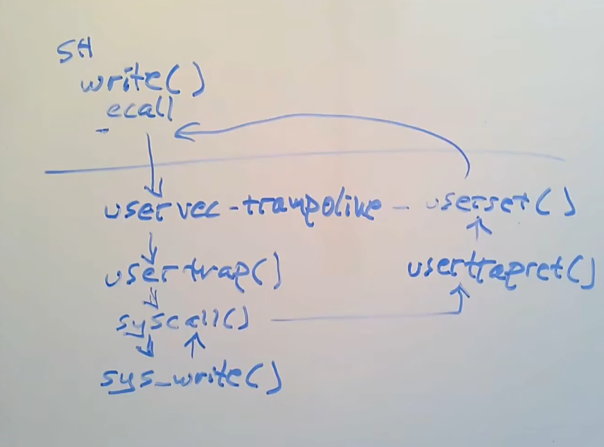
首先是 ecall 指令进入内核态；然后在 trampoline 处执行 uservec，完成初始化操作；随后执行 usertrap，判断中断类型，这里是系统调用中断；转到 syscall 中，根据 a7 寄存器中的值，调用对应的系统调用函数，即 sys_write 函数；最后使用 ret 指令进行返回，同时恢复寄存器的值，恢复到用户进行系统调用前的状态。
MIT S081 9 Page Fault
这次我们的主题是懒分配，我们需要了解的是写入时才会复制进程（fork），按照需求调用页，以及内存映射文件mmap。现代操作系统都完成了这些功能。
先回顾一下，虚拟内存有两个好处：
- 隔离：让每个进程各司其职而不会互相干扰。
- 一定程度的间接性
内核控制着虚拟地址如何映射到实际地址。xv6中有一个trampoline页，它运行内核将一个页面映射到多个页面。另一个则是守护页，它用来在用户空间和内核空间中保护栈。现在为之，我们的映射都是相对静态的。页面错误将会使得这一行为动态起来。也就是说，我们的内核通过页面错误来动态的调整映射
首先，发生页面错误需要我们去响应。这个错误地址会出现在stval寄存器下。同时还会有错误类型提供（跳转还是加载），他们会在scause寄存器中出现。
当在用户态下发生页面错误，操作系统就会跳转到内核态，当在内核态出现页面错误后，回去设置stval寄存器，scause寄存器等等
以及，还会去查看一场程序计数器看看发生在什么位置
sbrk
这个函数运行我们扩展堆，当我们的调用这个函数的时候，我们的内核会返回尚未使用的物理内存，再反向映射到我们的用户内存当中，将内存置零。之后，应用程序就可以使用。也可以使用负数来缩小。
在xv6中的对分配是急分配的，也就是一调用就会分配。但是在实际上现代操作系统不会这样做。这是为了避免应用程序过多的申请但是出现实际上并不需要的情况。于是“懒分配”应运而生。在懒分配下，sbrk几乎什么也不做，只是给p->sz加数，但是不分配任何内存。现在，当我们的应用程序需要使用这块内存的时候，会触发一个也错误，督促内核尽快完成分配
假设某一个时刻，应用程序申请了很多内存，把内存消耗殆尽了，但是这个时候由于采取了懒分配而并没有实际分配，请问这个时候的应用程序何时才会知道自己的物理内存不够了
答案：他被杀死的时候（乐），此时发生页错误，内核去分配的时候发现并没有更多的物理内存，所以会直接砍死这个进程
uint64 sys_sbrk(void)
{
int addr;
int n;
if(argint(0, &n) < 0)
{
return -1;
}
addr = myproc()->sz;
if(growproc(n) < 0)
return -1;
return addr;
} 这是原本的代码，现在我们来看看懒分配如何做：
uint64 sys_sbrk(void)
{
int addr;
int n;
if(argint(0, &n) < 0)
{
return -1;
}
addr = myproc()->sz;
myproc()->sz += n;
if(growproc(n) < 0)
return -1;
return addr;
}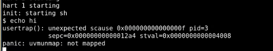
这里我们看到scause的值是15，出现的就是加载到页面的时候发现也不存在而爆出的也错误。
当我们接受到这个错误的时候，前往开辟内存。在 usertrap中写代码处理：
...
else if(r_scause == 15)
{
uint64 va = r_stval();
uint64 ka = (uint64)kalloc();
if(ka == 0)
{
p->killed = 1;
}
else
{
memset((void*)ka, 0, PGSIZE);
va = PGROUNDDOWN(va);
if(mappages(p->pagetable, va, PGSIZE, ka, PTE_W|PTE_U|PTE_R) != 0)
{
kfree((void*)ka);
p->killed = 1;
}
}
}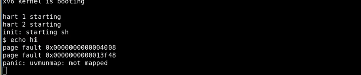
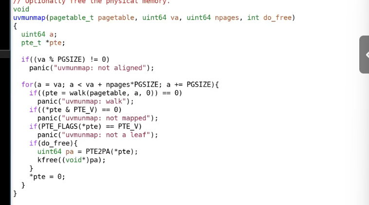
咋还是抛错了呢？答案是：那些被懒分配了的但是还没被是急分配的页面。所以，我们在这里，并不需要检查
if((*pte & PTE_V) == 0)
panic(...) 而是放心大胆的让他continue就好了。虚拟地址只是被告知多了，但实际上没有多，所以，我们不需要去释放那些甚至就没被映射的页。（就像没malloc就不去free）
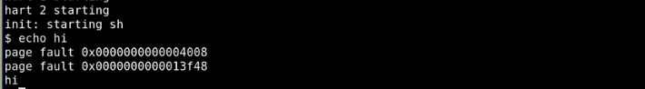
成功了。
事实上，操作系统里有很多空页。当我们查看二进制文件的布局可以看到：
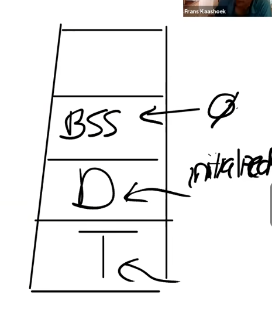
大量的0页。我们现在既然已经采用了虚拟内存映射到真实的物理内存，那就
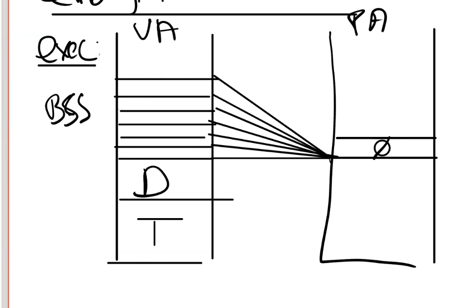
我们注意，这个页显然是不能写入的（原因显而易见，改动那些大量的映射到同一页的页数据会是一个灾难）。当我们需要一个向一个新的0页写入的时候就会实际分配一个0页。
Copy-on-write fork
我想Linux用户都会熟悉fork操作，这里就不多介绍了。注意到我们的父子进程在Copy-on-write fork下，在我们并没有在子进程下进行写入的时候，仍然会去将父进程和子进程的映射保持一致，当子进程的页面要被写入的时候，按照数量来进行开辟与改射。怎么判断要写入了呢？先将page设置成只读的就好，诱发页错误开新页。
copy page, map it, and restart the instrcution 但是问题来了：内核如何区分我们是在溢出写入还是正常的去获取页面呢？答案是回到硬件。在PTE的RSW位。所有我们会使用这个保留的位来辨别情况。
我们下面考虑这样的一个问题：当父子进程都在映射同一个空间的时候,突然有父进程或者是子进程被释放了,我们应该怎么做?是释放页面吗?显然不能!子进程可能还在使用这些页.所以我们引入一个引用计数器,放在哪里呢?可以放在进程维护的表里!
Demand Paging
我们知道我们需要按照需求调页:意思就是,啥时候真用到了啥时候才会映射.举个例子,当我们运行第一行代码的时候,触发page-fault来加载页.
另一方面,当我们的物理内存不足,除了把进程砍掉,可能还可以去换掉那些最近最少使用的页面（LRU），这可以借助PTE里的D位或者是A位统计进行。
mmap
我们会把大文件也给进行页映射，这样我们就可以直接操作大文件从而节约时间。我们不会立即映射，而是将相关的信息保存在vma中。
锁
本节课我们讨论的是锁：我们来看看我们为什么需要锁：我们直到对于多个程序需要用到核心，就需要对之进行一定的调配，防止错乱。他们可能会去访问一些公共数据。这样，就会产生读者和写着，我们应该如何防止出现写与读的同时冲突呢？这就是我们要解决的问题。
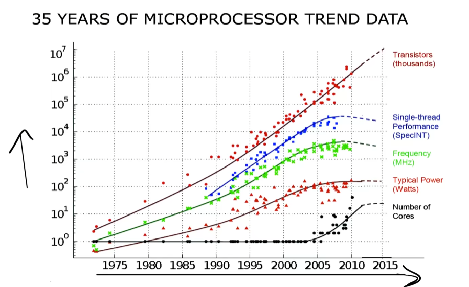
我们看到单个核心的频率逐渐达到极限，为了进一步提升效率，就需要我们转向多核心的内核。操作系统必须合理的调配之让核心的运行具有并行性。
锁应运而生。没有锁，我们对于共享数据的访问就会产生竞态条件。
这是一个典型的使用锁的kernel_free函数
void kfree(void* pa)
{
struct run* r;
...;
acquire(&kmem.lock);
r->next = kmem.freelist;
kmem.freelist = r;
release(&kmem.lock);
} 我们把锁去掉如何呢？答案是，出现的竞态条件将会使得CPU之间完全不知道有些事情已经做了导致重复的释放（重复调用kfree）
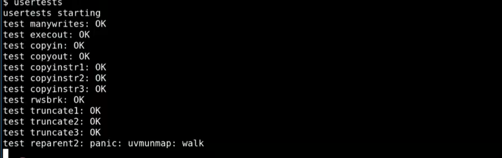
啊哈，挂起来了。CPU之间几乎会同时执行，这就需要我们对正在访问的共享数据结构上锁，让其他CPU知道某一实体正在访问这个数据结构
抽象我们的锁
我们的锁需要两个最基本的操作:acquire和release，也就是获取锁和释放锁。acquire必须保证只有一个进程可以获得锁。release就是释放锁。
acquire(Lock)
//
// critical section临界区
//
release(Lock) 我们定义在如上区间的代码为临界区。
当然，现在多出来的是并行锁——也就是说，不一定只有一个进程可以获取锁。事实上，应该是对于一个共享数据提供一个对之的锁方才可以。
什么时候用锁
建议是：当可能出现多个进程同时访问一个共享的数据结构的时候，需要我们对进程上锁！（很保守的规则）。
锁是否自动
不是，需要我们自己手动来进行，因为那样会太过死板。
锁的性质
- 首先，他保证了所有访问该数据结构的进程不会丢失更新
- 使得操作具有原子性
- 帮助维护一个不变的量
锁会产生的问题
可能存在死锁的问题：举个例子，CPU1获取了锁A，同时CPU2获取了锁B，然后在下一步的操作里CPU1希望获取锁B，但是CPU2同时希望获取锁A方才可以解除对锁A的占有——会发现双方都在窥探自己手中的锁却没法释放——寄了。
解决办法？那就是规定锁的获取顺序！也就是说，获取某一个锁之前需要务必保证另一个锁是可以获取的！
另一个就是性能的问题——那就是他将本可以并行化的操作串行化。所以我们的解决办法就是试图重构那些过于频繁发生的锁竞争的部分
Hints
注意到RISC-V上有一个硬件支持的testandset指令，可以防止在软件层面上两个CPU同时获取到锁。也就是说我们在硬件层面上支持原子操作。
注意，有的时候编译器和处理器会对代码进行重排，为了防止重排（会导致一些本是acquire-release临界区代码不再临界区）
Threads
我们将会查看关于xv6的线程的底层实现。为什么会有线程呢？我们希望电脑可以做到同时间去做多个事件。并且期望这些事情没有发生错乱。
另一个需要线程的原因是可以简化程序的组织逻辑（不是书写逻辑）。所以，分解我们 的程序，从而使用线程来分担那些可以被分担的部分是一件很重要的事情。
对于线程的定义多样，我们认为一个线程就是一个CPU正在执行的程序流的体现，换而言之，也就是一个CPU上做的事情的流水线，我们认为这是一个线程，他按照普通的方式一条一条的执行指令。
思考线程的最重要的，也是最关键的部分就是去思考线程的状态(State of the process)，而这往往需要我们看到PC(Program Coounter)，我们很关心这个进程到哪里了。这是我们关心我们的目标线程，我们还需要关心其他的线程和这个本线程之间的关系。她决定给了我们对于这些线程协作方式的指导。
除了PC以外，一些寄存器的值也是需要我们进行保留的。组织这些我们需要线程系统来完成这件事情。由此，就需要关心如何交织起来这些多线程。
xv6在支持自动的多个用户进程之间的切换，每一个进程都有他们独属于自己的内存。而对于系统线程则是会共享内存，用户线程则不会。
进程切换
就是依靠定时器中断来切换进程。内核取得控制权的第一步就是依据定时器的中断陷入，进入中断处理程序，从而进行进程的切换处理。随后，内核让出调度器，让调度器执行其他的进程。
这是抢占调度。即使我们的代码不愿意让出CPU，我们仍然会直接剥夺CPU分给其他的程序。上面一段的陈述则是xv6对于进程抢夺的实现。
我们还需要区分那些线程的完整状态比如说：
一些线程就在跑：RUNNING（运行态）
一些线程准备好了，就等待CPU的选择执行: RUNNABLE（就绪态）
一些线程并不需要被运行，可能是在等待IO: SLEEPING
进程的切换就需要把这些状态字进行必须要的操作。从而恢复上下文。在用户层面上，每一个进程都有内存，用户堆栈，PC，寄存器等，当发生中断的时候，会把这些东西保存到trapframe里去。
注意，当我们切换到其他进程的时候，会从用户走到内核，内核中走向调度进程的进程中，切换内核进程再返回到其他的用户进程
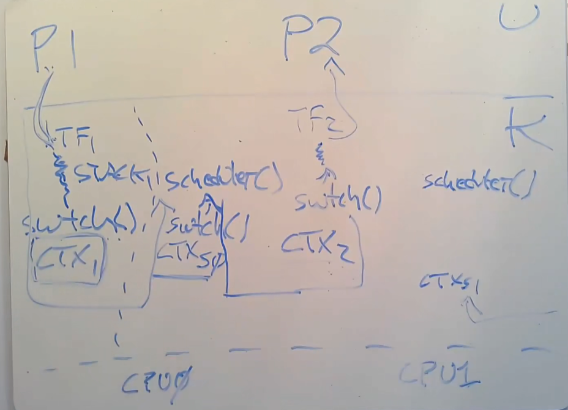
注意所有的流程都需要有原子性，我们不希望在我们切换的时候发生调度产生未定义行为。
Threads
我们将会查看关于xv6的线程的底层实现。为什么会有线程呢？我们希望电脑可以做到同时间去做多个事件。并且期望这些事情没有发生错乱。
另一个需要线程的原因是可以简化程序的组织逻辑（不是书写逻辑）。所以，分解我们 的程序，从而使用线程来分担那些可以被分担的部分是一件很重要的事情。
对于线程的定义多样，我们认为一个线程就是一个CPU正在执行的程序流的体现，换而言之，也就是一个CPU上做的事情的流水线，我们认为这是一个线程，他按照普通的方式一条一条的执行指令。
思考线程的最重要的，也是最关键的部分就是去思考线程的状态(State of the process)，而这往往需要我们看到PC(Program Coounter)，我们很关心这个进程到哪里了。这是我们关心我们的目标线程，我们还需要关心其他的线程和这个本线程之间的关系。她决定给了我们对于这些线程协作方式的指导。
除了PC以外，一些寄存器的值也是需要我们进行保留的。组织这些我们需要线程系统来完成这件事情。由此，就需要关心如何交织起来这些多线程。
xv6在支持自动的多个用户进程之间的切换，每一个进程都有他们独属于自己的内存。而对于系统线程则是会共享内存，用户线程则不会。
进程切换
就是依靠定时器中断来切换进程。内核取得控制权的第一步就是依据定时器的中断陷入，进入中断处理程序，从而进行进程的切换处理。随后，内核让出调度器，让调度器执行其他的进程。
这是抢占调度。即使我们的代码不愿意让出CPU，我们仍然会直接剥夺CPU分给其他的程序。上面一段的陈述则是xv6对于进程抢夺的实现。
我们还需要区分那些线程的完整状态比如说：
一些线程就在跑：RUNNING（运行态）
一些线程准备好了，就等待CPU的选择执行: RUNNABLE（就绪态）
一些线程并不需要被运行，可能是在等待IO: SLEEPING
进程的切换就需要把这些状态字进行必须要的操作。从而恢复上下文。在用户层面上，每一个进程都有内存，用户堆栈，PC，寄存器等，当发生中断的时候，会把这些东西保存到trapframe里去。
注意，当我们切换到其他进程的时候，会从用户走到内核，内核中走向调度进程的进程中，切换内核进程再返回到其他的用户进程
注意所有的流程都需要有原子性，我们不希望在我们切换的时候发生调度产生未定义行为。
File System
文件系统可以认为是最面向用户的部分。我们实际上一直在使用这些服务。他又这些值得注意的特性：
用户友好的命名（路径啊等帮助在组织文件结构）
在用户和进程之间共享文件
持久性和可修复性
注意到文件系统的另一个有趣的话题是日志恢复，我们下一节课在讨论之。
文件系统会使用缓存技术，这是因为写入硬盘缓存是需要事件的。
一些常见的API
open: 打开文件，返回文件句柄
write: 向文件文件写入字节等信息
read: 从文件读入数据进行程序的加载
link : 链接文件，可以想象成超链接
unlink：解除链接
文件系统的层次和结构问题
inode
这是一个表征文件独立对象的东西：里面有文件的信息。文件系统实际上是使用inode来编排信息。会有一些计数指针指向之，当计数为0的时候会自动删除。
fd
文件描述符，实际上就是给程序进行操作的文件句柄。
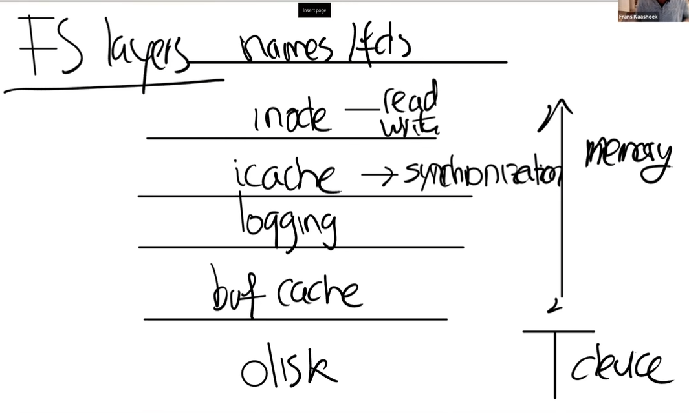
这是文件结构的层次
存储设备
我们的存储设备主要是
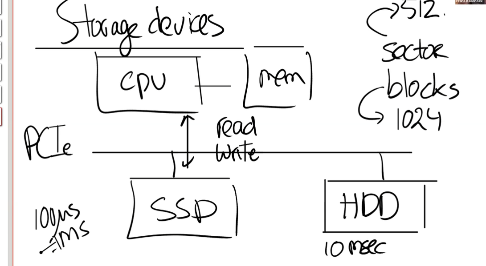
磁盘的布局可以认为是一个巨大的字符数组，文件系统的作用就是在磁盘上布置数据结构来操纵和恢复磁盘。
一般而言，0号磁盘用于做引导快而不被使用，在xv6中，1号块则是做超级快，2-32块则是做日志快用于书写日志，32-45则是保存inodes数据，之后还会有一个bitmap block从而跟踪后面的数据块，后面的就是data了。
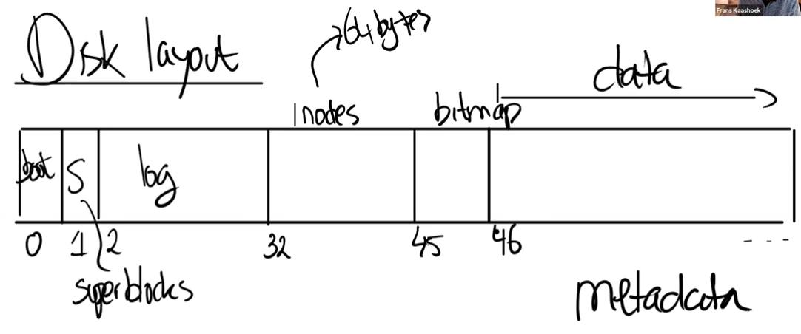
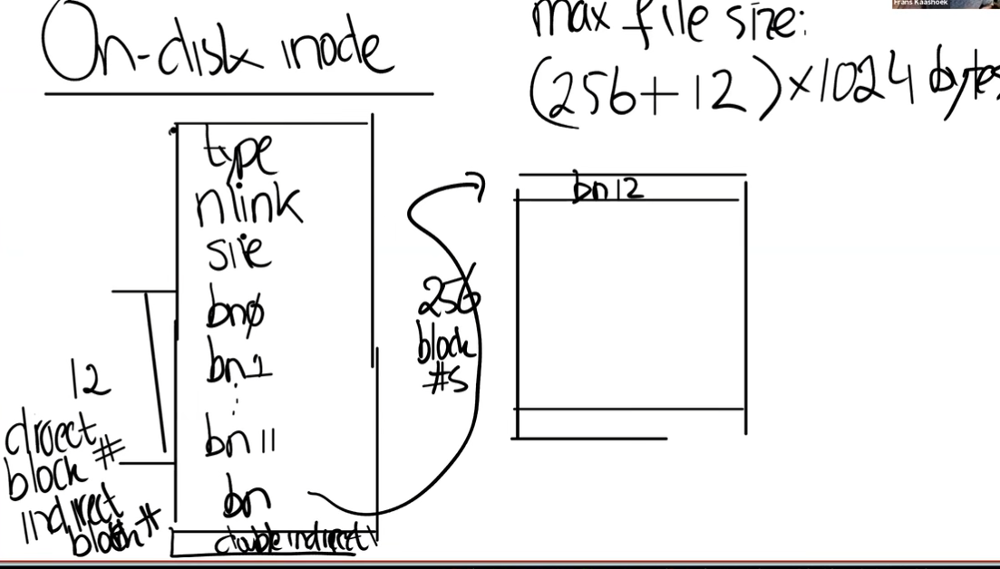
inode的内部结构如图所示。
文件夹
文件夹的结构和文件是类似的，不过起到的是引导的作用
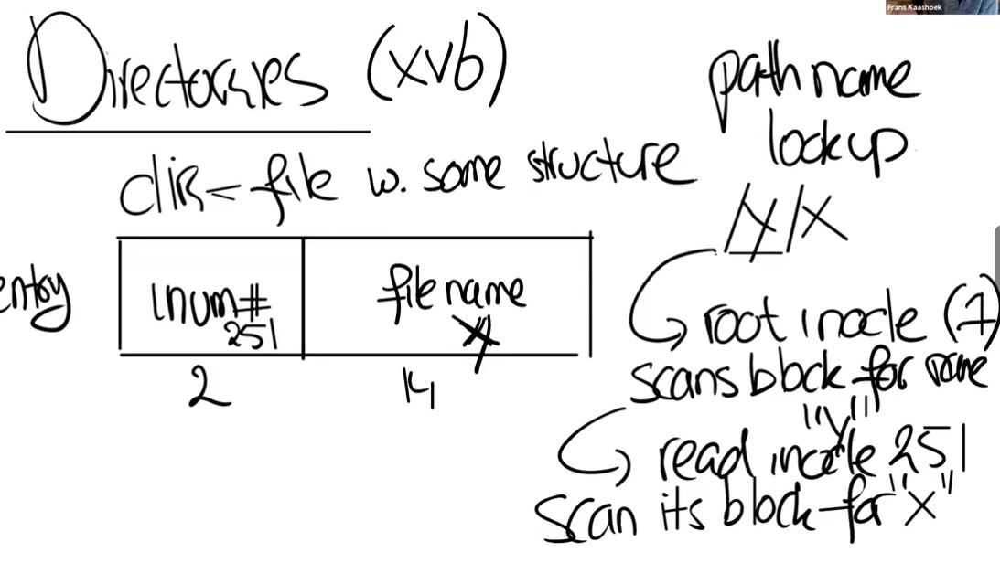
写入文件可能发生了什么
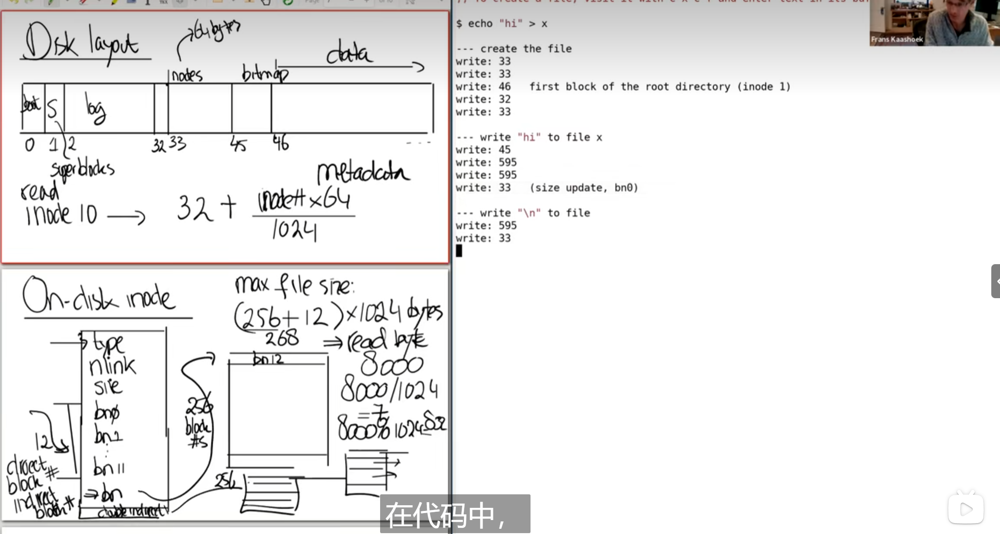
Crash Recovery
我们下面要讨论的就是文件系统的恢复问题，也就是说当我们的系统意外崩溃了，我们的文件系统会如何做出反应。
很多的文件系统是多步的操作，这也就意味着在一些不太友好的时机断电会导致文件系统出现局部的信息不对等等。所以这就要求我们的文件系统配备日志进行修复，把没有做完的事情补充完整。
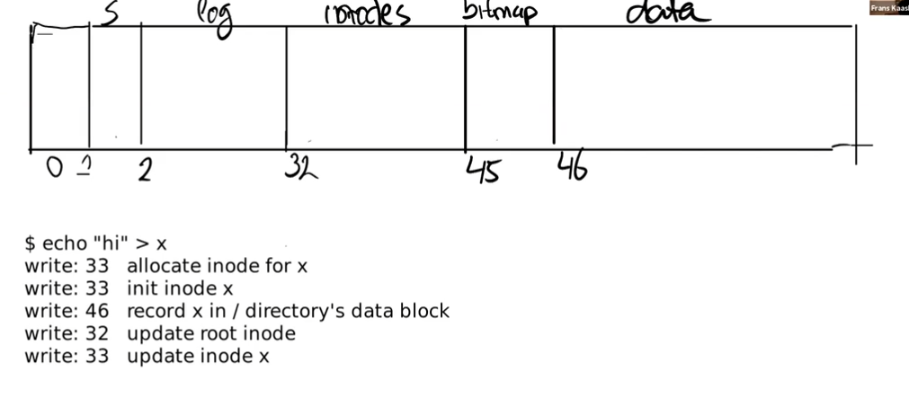
以echo "hi" > x为例子，我们这里就会call系统调用create，然后再写入文件。可以看到文件系统实际上执行了很多步的操作。如果这个时候发生了断点，就会意味着所有内存的数据（RAM）会发生清零，我们只有磁盘的数据了。如果没有日志恢复，就会意味着可能执行到中间的某部分但是没有执行完毕，明明有所分配但是却没办法操作他，导致我们产生了一个broken inode。
这些解决方法是日志。首先他需要保证对文件系统的调用必须是原子的，也就是说，一些操作必须一次性的完成。另一个特性就是快速恢复。最后一点就是它尽可能要高效率。
现在有了日志，我们的操作发生改变了：比起来直接写入磁盘，我们转向写入日志，我们在对文件系统进行任何的更新的时候总是先写入日志。然后，提交这些日志开始执行操作，最后就是实操（安装），最后就是把日志清理掉。
中间的任何步骤发生了中断，我们的步骤就是退回去到上一步，然后把我们的操作重新执行一遍。
Recovery in Linux Ext3
我们下面就是讨论Linux 的 ext3文件系统是如何进行文件系统日志恢复的
xv6的实现相对简单，他就是日志头和写入日志的块组成。所有的操作一开始会对日志进行操作，然后方才真正的写入磁盘。
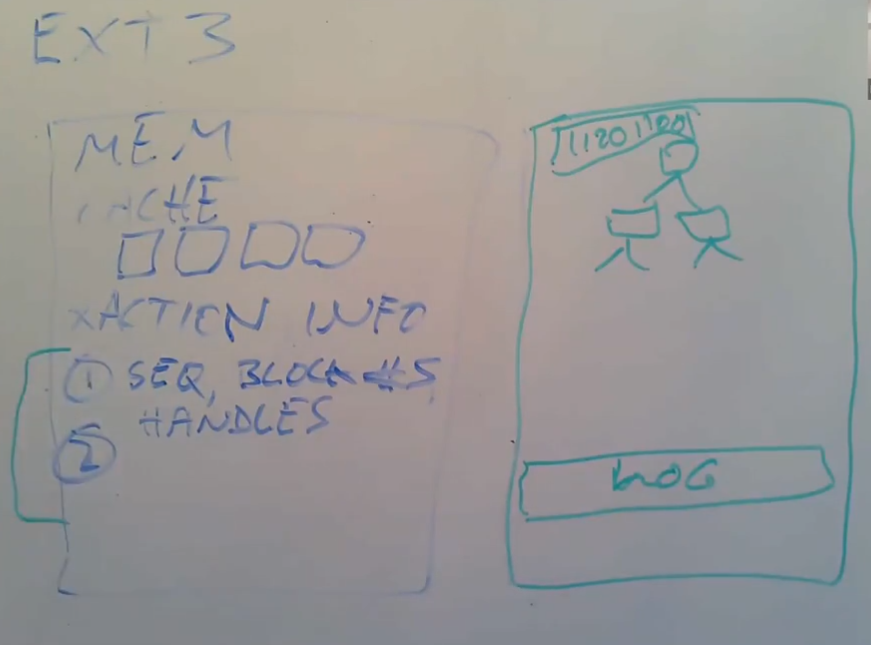
ext3跟xv6很相似，但是不同之处在于它支持同时跟踪多个事务。
下面我们来讨论日志的格式。日志的头部有一个超级快：它包含第一个有效事务的偏移量和序列号

提交块的区分是一个魔数，我们利用它来区分数据块和提交快
提升ext3的性能办法是：
异步系统调用：只是更新缓存没有急着直接写
批量处理：在真正写的时候批量处理磁盘事务
并发：调用多线程写文件
异步系统的调用有一个缺点：系统调用返回不一定真正意味着磁盘数据真正的写入的磁盘。意味着我们的磁盘写入行为需要很谨慎。所幸的是存在系统调用来完成真真正正的写入。就是fsync调用，他保证磁盘会真正立马的写入数据。
批量处理则是处理那些频繁的写入问题，让我们把本来需要多次的磁盘写入合并成一次。
并发处理有两种，相对于xv6。它允许多个系统调用同时执行，同样的处于不同阶段的事务可以同时进行。比如说允许一个事务处理系统调用，另一些可能正在向磁盘写入，这是没有关系的
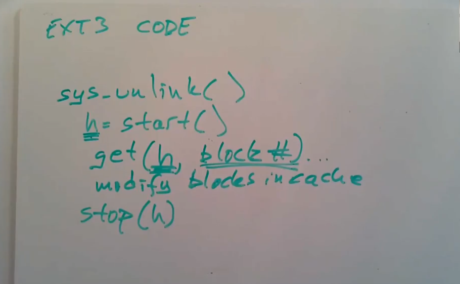
提交的基本步骤如下：
- 首先就是阻塞新的系统调用
- 对于正在进行的系统调用则是等待他们完成
- 开启新的事务，结束对新的系统调用的阻塞
- 现在开始写描述块，记录那些快发生了修改
- 我们还会把修改从缓存写入日志
- 等待4， 5完成了，提交记录
- 等待6的完成
- 到这里，事务到达了提交点，我们将会保证这个写入已经完成了
- 将事务块从日志写入磁盘
- 复用日志。
我们判断日志的状态就是看日志的状态数据部分。我们是如何区分数据块和描述块的？答案是魔数(magic number)
现在回答这个问题：为什么只能有一个事务处理log呢？
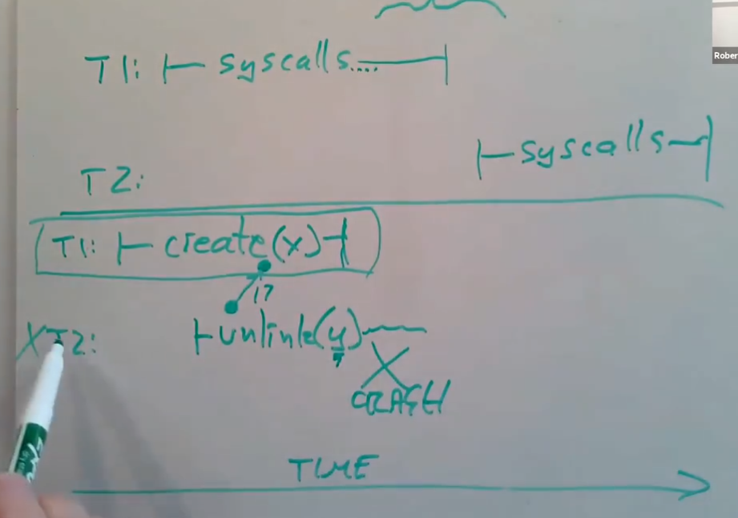
我们需要保证写入的原子性，一旦打破了可能会出现未定义的行为。
Virtual Memory in User Application
这一次我们讲用户应用程序的虚拟内存。
OS内核使用虚拟内存页表，实现了很多高效的算法。这里，我们希望用户应用程序也可以像内核程序一样，积极的响应页错误等。
我们需要什么系统原语呢？Trap，就是在页缺陷的时候升级特权位，让页补充程序将需要的页换进来。
另一个原语Prot1则是用来降低可访问权限。比如说从读写降到只读，从只读降低到不可访问。
那么ProtN自然就是调用N次Prot1了，为什么会有这个原语呢？答案是每一次调用Prot1都会刷新TLB，刷新TLB代价太大，所以就可以合并降低权限操作来保证只访问一次TLB。
相反的操作是UnProt，就是提升权限。Dirty就是标记一个页被修改过。Map2则是允许一个页被映射两次
Unix今天实现了上述陈述的几个子集。mmap就是将文件或者是设备映射到了调用者的地址空间，换而言之，访问这个设备就像访问内存一样的行为，从而提升效率（相比访问文件要快）
mprotect则是将特定的部分内存设置保护位。等等
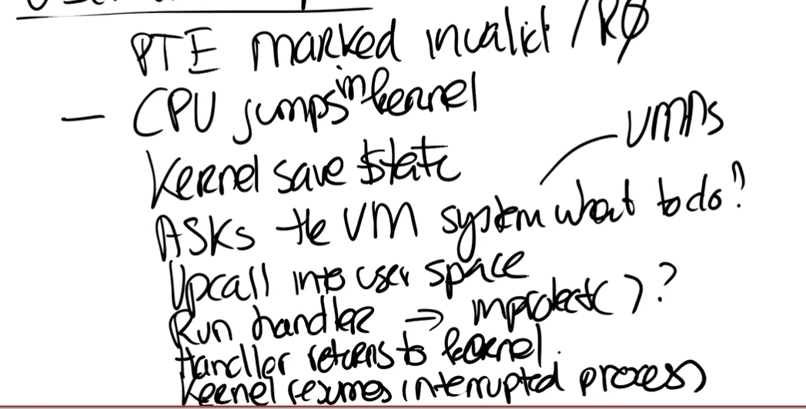
这是一个内核处理页访问的经典步骤。
首先程序访问到了一个可以触发页错误的页面，然后内核保存用户程序状态，随后依照页错误处理程序查看如何正确处理，对于那些页缺失等就是直接换入页然后重新向上传递和恢复到用户态，对于那些例如Sigment Fault的不可恢复的错误，那么首先会查看是否有处理此类错误的程序，安装了的话就会将事件向上传播到用户态，使用这类程序处理这些错误，反之就是直接砍掉进程，恢复到用户模式
我们有一个技巧：对于那些操作昂贵的操作，可以将结果打表记录，然后下此是应用类似的操作的时候可以取表做变换操作。这是一个空间换时间的操作。
OS内核层次
宏内核
我们这次讨论的是微内核。对于传统的而言，大多数操作系统都是宏内核，也就是内核仿佛是一个庞大的整体，具有强大的抽象的抽象能力，他让我们可以对应用程序隐藏不必要的细节。
另外，我们可以认为内核是一个巨大的应用程序，文件系统，调用器等部分只是子函数，这让这些组件之间的耦合度比较高。
微内核
宏内核太大了，耦合度过高，传统的内核一旦触发一些错误，容易导致整个系统的崩溃。另一方面，他太过庞大，我们往往只需要其中几个部分。这促使我们思考需要对庞大的内核进行部分的解耦合。
在微内核中，我们将会有一个小的内核，支持IPC进程特性的机制和类似进程的概念TASK，将其余一切常见的服务，比如说类似copy-on-write，或者是文件系统等内容放到用户态。相互之间的通信使用的是类似IPC的通信提供服务
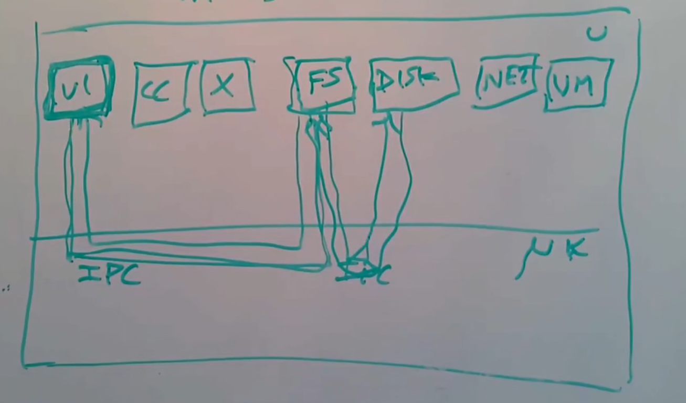
我们发现微内核更轻量，更容易定制，而且由于耦合度较低，他让系统变得十分的稳定。另外，还允许我们对之提供更多的操作系统抽象。
它在内部有一个叫做Task或者地址空间的概念，这或多或少的对应了Uinx内的进程概念。Task包含了一些内存，地址从0开始，并且可以像进程一样执行指令。区别于XV6的是，每个Task可以有多个线程，L4会调度每个Task内的多个线程的执行。这样设计的原因是，可以非常方便的用线程来作为组织程序结构的工具。我不知道在论文发表的时候，L4是否支持了多处理器，或许它包含了在多个处理器上运行同一个程序的能力。所以L4内核知道Task，知道线程，也知道地址空间，这样你就可以告诉L4如何映射地址空间内的内存Page。
另一个L4提供的就是是IPC。每一个线程都有一个标识符，其中一个线程可以说，我想要向拥有这个标识符的另一个线程发送几个字节。
然而微内核不是那么好，由于解耦，我们的直接通信变成了传递性质的通信，导致我们的处理变慢，
现在考虑v改进的IPC通信。
也就是跳过内存的缓存，这要求我们提前知道两个通信的进程，将CS客户模式转变为P2P的通信模式。
虚拟机
我们现在讨论虚拟机，我们将计算机进行抽象，我们有虚拟机器管理程序，向上提供一系列计算机的抽象。也就是对外表现为同一台机器上有多个操作系统。
有两种模式——客户用户和客户监管者模式，他们都接受来自VMM的服务。
VMM可以完全由软件实现，它翻译指令给真实CPU。但是它速度太慢。另一方面，我们可以直接让他直接接触真正的CPU，但是必须采取一些操作。
我们的第一步就是让内核以用户态运行。然后运行到特权指令时，运行在监管者模式的VMM将会截获特权指令交管给VMM处理。这里会提供硬件的虚拟抽象
总而言之，VMM就是仿照硬件的行为为上层提供抽象。
还有一种就是硬件级别的支持虚拟机。
内核与高级编程语言
使用 C 语言实现 OS
优点
- 内存分配和释放的控制能力
- 几乎无隐藏的代码
- 直接访问内存的能力(可以读写 PTE 的标志位或设备寄存器)
- 极少的依赖(不需要运行时)
缺点
- 缓冲区越界
- 使用已释放的内存(use-after-free bugs)
- 线程共享动态内存(很难确定是否可以释放内存)
使用高级编程语言(HLLs)实现 OS
优点
- 提供了内存安全性(memory-safety). 上述 C 语言实现 OS 的内存漏洞不会存在.
- 类型安全
- 通过 GC 实现的自动内存管理
- 并发更友好
- 更好的抽象(接口, 类等面向对象语法更易写出模块化代码)
缺点
- 更差的性能(High Level Language Tax):
- 边界检查, 类型检查, 空指针检查
- 垃圾回收
- 与内核编程不兼容
- 无内存直接访问能力
- 不能集成汇编语言
- 受限的并发/并行(与内核所需的并行不一致, 比如在线程调度时线程的锁会传递, 在用户程序中不常见)
论文背景
- 缺少对内核中高级编程语言的优劣分析的工作
- 使用高级编程语言构建操作系统内核与 Linux 内核比较
选择的高级语言
Golang
- 容易调用汇编代码
- 静态编译语言, 性能更好
- 容易并发
- 容易静态分析
- 带有垃圾回收
Biscuit
使用 Golang 实现的宏内核操作系统
特性
- 支持多核 CPU
- 支持用户程序多线程
- 高性能日志文件系统
- 虚拟内存系统
- 完整的 TCP/IP 栈
- 高性能驱动: 网卡和磁盘驱动
用户程序
- 用户进程有自己的地址空间(页表)
- 用户/内核内存空间由硬件隔离
- 每个用户线程有对应的内核线程
- 内核线程由 go runtime 提供的 goroutine 实现
系统调用
- 用户线程将参数保存在寄存器中
- 用户线程执行
SYSENTER指令进入到系统内核 - 控制权转移到内核线程
- 内核线程执行系统调用, 通过
SYSEXIT返回到用户空间
实现的挑战
- 在裸机上运行 Go runtime
- 使用 goroutines 运行不同应用程序
- 在临界区中的设备中断处理
- 最困难: 堆耗尽
- 多数内核: 通过
malloc()返回错误 - Go 调用
new分配对象, 总是成功
- 多数内核: 通过
堆耗尽的解决方法
不合适的方法
- 报 panic
- 在内存分配器中等待 -> 可能导致死锁
- 检测并处理无内存时返回的空指针
最终解决方案
保留内存. 在程序执行系统调用前调用 reserve() 函数预先保留足够内存(保留的内存通过算法分析得到)
优点:
- 内核中没有检查
- 不用错误处理代码
- 没有死锁问题
选择 C 语言或 HLL 实现 OS
- 性能至关重要 -> C 语言 (提升至少 15%)
- 最小化内存使用 -> C 语言
- 安全至关重要 -> HLL
- 性能不那么重要 -> HLL
NetWork
我们下面讨论网络与操作系统的联系。
网络的设计技巧就是对所有的实现经可能分层，这里我们不关心底层到底时如何实现交换机和主机的连接的。
我们的网络链接大抵就是这样。
对于底层的实现我们可以看到：
这是假设我们的两个主机正在通信：以太网协议实际上就是允许我们在通信的时候可以提供足够的信息。这里的地址就是MAC地址。
这里就是ARP通信(地址解析协议，即ARP（Address Resolution Protocol），是根据IP地址获取物理地址的一个TCP/IP协议)
很有趣的是,我们在事实上就是频繁的封装,每一个层都只是认为它所携带的前面的内容都是数据而不是其他的
上图是一个常见的网络协议栈.我们就是这样转化和封装数据帧让然后发送的.
对于接受,操作系统注册了一个中断用于接收NIC网卡发送的数据,然后将之直接压入缓冲队列
对于这样,如果自己就是目标主机,那么就会直接发送到上层,不是则会再次进入缓冲队列等待下一次发送.
MeltDown
也就是安全Issue,,我们现在思考就是如何开展和防御攻击,从而更好的理解内核.
第一段代码
核心代码
char buf[8192]
r1 = <a kernel virtual address>
r2 = *r1
r2 = r2 & 1
r2 = r2 * 4096
r3 = buf[r2]基本流程
- 攻击者在内存中声明了一个缓冲区
buf, 这个缓冲区为普通的用户内存且可被正常访问. - 攻击者拥有了内核中的一个虚拟内存地址, 其中包含了一些想要窃取的数据
- 这里的程序是 C 和汇编的混合. 第 3 行代码的意思是从这个内存地址取值出来并保存在寄存器 r2 中
- 第 4 行获取寄存器 r2 的低比特位, 所以此处这种特定的攻击只是从内核一个内存地址中读取一个比特
- 第 5 行将这个值乘以 4096, 因为低比特位要么是 1, 要么是 0, 所以这意味着 r2 要么是 4096, 要么是 0
- 第 6 行中读取前面申请的缓冲区, 要么读取位置 0, 要么读取位置 4096.
不能工作的原因
在大部分操作系统中, 内核内存会被完整映射到用户空间, 即所有内核的 PTE 都会出现在用户程序的页表中, 通过 PTE_U 等标志位来进行权限隔离, 使得用户代码不能直接访问内核内存地址.
因此, 第 3 行读取内核内存地址指向的数据是不被允许的, 会触发 Page Fault.
攻击成功的关键
预测执行(Speculative execution)
论文中称之为乱序执行(Out-of-order execution)
r0 = <something>
r1 = valid // r1 is a register; valid is in RAM
if(r1 == 1) {
r2= *r0
r3 = r2 +1
} else {
r3 = 0
} 代码第 2 行需要一个 load 指令将内存数据加载到寄存器, 会花费上百个时钟周期.
第 3 行代码是个 if 条件分支, CPU 会通过预测执行选择一个分支执行(在将 valid 实际加载到 r1 完成之前). 直到第 2 行代码执行完成后, CPU 再确定预测的分支是否正确, 若预测正确则继续执行, 若预测错误会回滚预测执行的代码.
CPU 的分支预测可能基于之前的分支选择.
若 r0 不是有效的指针, 超前执行到第 4 行时不会产生错误, 直到第 2 行代码运行完成, 因此错误的产生可能会延后数百个 CPU 周期.
确定一条指令是否正确的超前执行了而不是被抛弃了这个时间点, 对应的技术术语是 Retired.
在此例子中, CPU 进行了两个推测: 一个是 CPU 推测了 if 分支的走向, 并选择了一个分支提前执行; 除此之外, CPU 推测了代码第 4 行能够成功完成. 对于 load 指令, 如果数据在 CPU 缓存中且相应的 PTE 存在于页表, 不论当前代码是否有权限，Intel CPU 总是能将数据取出. 如果没有权限, 只有在代码第 4 行 Retired 时, 才会生成 Page Fault, 并导致预测执行被取消.
在论文中提到, Meltdown 发生在 Intel CPU 上而不会发生在 AMD 的 CPU 上. 普遍接受的观点是, AMD CPU 预测执行时在没有权限读取内存时, 不会将内存地址中的数据读出(即先进行了权限检查), 而 Intel CPU 则可以.
CPU 缓存
CPU 包含 L1 缓存, L2 缓存等多级缓存.
当 CPU 执行 load/store 指令时, 首先会访问 L1 缓存. L1 缓存最快, 只需要几个 CPU 周期, 通过虚拟地址索引.
若地址不在 L1 缓存中, 则需要判断目标虚拟地址是否在 TLB 中记录, 若在, 便通过 L2 缓存获取数据. L2 缓存比 L1 缓存更大, 需要几十个 CPU 周期, 记录着物理地址.
若不在 L2 缓存最终会花费上百个 CPU 周期从内存中读取数据.
在一个多核 CPU 上, 每个 CPU 核会有一个 L1 缓存, 很小很快; 同时每个 CPU 核还有一个大一些的 L2 缓存; 此外通常还有一个共享的 L3 缓存. 另一种架构是, 所有的 L2 缓存结合起来, 所有 CPU 共享. 通常 L1 缓存是虚拟地址寻址, 而 L2 和 L3 缓存是物理地址寻址.
Flush + Reload
作用
一段特定的代码是否使用了(被允许访问的)特定地址的内存
步骤
- 确保目标地址 x 不在缓存中. Intel 提供了指令 clFlush 用于刷新缓存确保接收的地址不在缓存中.
- 调用某段可能使用内存地址 x 的代码.
- 使用 rdtsc 指令记录时间(返回 CPU 启动后经过的 CPU 周期数).
- 加载内存地址 x 的数据到对象
- 再通过 rdtsc 指令读取时间. 若两次读取时间的差是个位数, 则第 2 步中使用了内存地址 x 的数据; 若读取时间的差值较大(超过 100), 则使用了内存地址 x.
熔断攻击
char buf[8192]
// the Flush of Flush+Reload
clflush buf[0]
clflush buf[4096]
<some expensive instruction like divide>
r1 = <a kernel virtual address>
r2 = *r1
r2 = r2 & 1 // speculated
r2 = r2 * 4096 // speculated
r3 = buf[r2] // speculated
<handle the page fault from "r2=*r1">
// the Reload of Flush+Reload
a = rdtsc
r0 = buf[0]
b = rdtsc
r1 = buf[4096]
c = rdtsc
if b-a < c-b:
low bit was probably a 0声明了一个缓冲区 buf, 现在从内核地址窃取 1 比特数据.
- 首先 clflush 缓存中的数据.
- 执行费时的指令, 从而使得后续代码 CPU 可以预测执行
- 预测执行 10~13 行
- 由于第 10 行访问了不可访问的内核地址引发 page fault, 进入到下面的 page fault 处理程序
- 检测 buf[0] 和 buf[4096] 读取的 CPU 用时, 来判断内核地址的 1 比特数据.
Meltdown 修复
KAISER(KPTI)
在 Linux 中称为 KPTI (Kernel page table isolation). 不将内核内存映射到用户的页表中. 在执行系统调用时切换到拥有内核内存映射的另一个页表(类似 xv6).
缺点: 降低系统调用性能(需要切换页表, 同时导致 TLB , L1 缓存被清空).
硬件修复
一般数据的权限标志位会在 L1 缓存中, 因此 CPU 可以在获取数据时检查权限标志位. 通过在更早的时间检测权限标识位保证预测执行指令不会访问到无权访问的数据.
RCU
读写锁
接口
r_lock(&l)r_unlock(&l)w_lock(&l)w_unlock(&l)
多个数据读取者可以获取读锁并发读, 但只能有一个数据写入者获取写锁.
简要实现
// A simplified version of Linux's read/write lock.
// n=0 -> not locked
// n=-1 -> locked by one writer
// n>0 -> locked by n readers
struct rwlock {
int n;
};
r_lock(l):
while 1:
x = l->n
if x < 0
continue
if CAS(&l->n, x, x + 1)
return
// CAS(p, a, b) is atomic compare-and-swap instruction
// if *p == a, set *p = b, return true
// else return false
w_lock(l):
while 1:
if CAS(&l->n, 0, -1)
return- ```
rwlock结构体: 其中有一个计数器n - `n` 为 0 表示锁未被以任何形式持有 - `n` 为 -1 表示被数据写入者持有写锁 - `n` 大于 0, 表示有 n 个数据读取者持有读锁. - `r_lock()`: 在循环中等待写入者释放锁(n<0). 获取锁(n>=0)后对锁原子操作(CAS)加 1. CAS: Compare-and-swap. - 多个 `r_lock()` 同时调用时只有其中 1 个 CAS 能够执行成功返回 1, 其余失败的将继续循环尝试执行 CAS. - 该实现读取者优先, 读取者过多时写入者可能一直等待. ##### 性能问题 - 多个数据读取者同时调用 `r_lock()` 时, 都会读取技术 `l->n` 将其加载到 CPU 的 cache 并调用 CAS 指令修改计数值. 在多核 CPU 情况下, 只有一个 CAS 指令成功, 其它失败, 同时需要告知其它 CPU 的 cache 失效(让其它 CPU 核不缓存该数据, 称之为无效化, invalidation). 假设有 n 个读取者, 则每个 `r_lock()` 平均循环 n 2 \frac{n}{2}2n 次, 且每次循环涉及 O ( n ) O(n)O(n) 的 CPU 消息, 则**获取锁的成本为 \**O ( n 2 ) O(n^2)O(n2)\****. - 读写锁将一个**只读操作变成了**需要修改锁的计数器 `l->n` 的**写操作**. ### RCU RCU: Read Copy Update. 通过 RCU 通过数据写入者进行一些额外的规则和操作, 使得数据**读取者可以不使用任何锁**进行读取. #### 基本实现 以单向链表为场景:  一个结点元素内容为字符串的单向链表. 涉及的写入操作有三种: - 修改结点内容(字符串) - 插入结点 - 删除结点 RCU **不能直接修改结点的内容**, 而是**创建并初始化一个新的结点**, 用新结点替换旧结点. 这样数据读取者永远不会看到一个正在修改的链表元素.  旧结点 E2 和结点 E3 的指向关系不会删除, 因为更新指向新结点指针时, 可能有读取者读取到了 E2. 将 E1 的 next 指针从旧的结点 E2 切换到新的结点 E2 的过程, 被称为**提交写入**(committing write). **单个提交写入操作是原子的**. 以提交写入操作的完成为分界, 读取者要么要么读取的是旧元素, 要么读取的新元素. RCU 主要用于具备单个写入提交操作的数据结构上. 如双向链表则对 RCU 不太友好, 而树(无父指针)对于 RCU 是友好的.  #### 内存屏障 编译器和 CPU 都会重排指令, 需要使用内存屏障(barrier)以防止指令重排.  读取者和写入者都需要使用内存屏障: - 数据写入者: 在**提交写入(committing write)操作之前加入内存屏障**, 以确保完成提交写入时, 元素已完全初始化.  - 数据读取者: 在**读取了结点的指针后, 读取指针指向的内容之前加入内存屏障**.(此处可能是避免指针的值被先前缓存等情况, 课程中也未讲清楚).  #### 旧元素释放 对于旧元素在被替换后释放的时机. ##### GC 对于带有 GC(垃圾回收)的编程语言可以无需考虑该问题, 由 GC 进行元素释放. ##### 延迟冻结(Delaying Freeze) 对于无 GC 的情况(如 Linux 系统), 读写规则如下: - 数据读取者: **不允许在线程切换的上下文切换时持有 RCU 保护的数据**, 即数据**读取者不能在 RCU 的临界区内出让 CPU**. - 数据写入者: 在每个 CPU 核至少执行过一次上下文切换后再释放元素(每个核都进行过上下文切换则没有核还持有该元素).  数据写入者的代码: ```c E1->next = e; synchronize_rcu(); free(old);
- 首先完成对数据的修改
- 调用
synchronize_rcu()已迫使每个 CPU 核发送一次上下文切换, 这也确保没有 CPU 核再持有指向旧元素的指针 - 释放旧元素
- 该情况写入者需要等待
synchronize_rcu()进行上下文切换. - 使用
call_rcu()可以立刻返回. 该函数参数为待释放的对象和执行释放的回调函数. RCU 系统会将这两个参数存入一个列表, 并立刻返回. 在后台 RCU 系统会检查每个 CPU 核的上下文切换计数, 当每个核都发生过上下文切换后, 调用回调函数进行对象的释放. 缺点是大量调用该函数, 参数列表会很长占用大量内存导致内存耗尽.
数据读取
// list reader:
rcu_read_lock()
e = head
while(p){
e = rcu_dereference(e)
look at e->x ...
e = e->next
}
rcu_read_unlock()- 数据读取位于
rcu_read_lock()和rcu_read_unlock()之间. 这两个函数值设置一个标志位来阻止定时器中断导致的线程上下文切换(中断还会发生, 但不切换上下文).
这里的标志位是每个 CPU 独有的数据, 而不是所有 CPU 共享, 因此不会引起 CPU 间的缓存一致消息. rcu_dereference()函数会插入内存屏障. 首先会从内存中拷贝e, 触发一个内存屏障, 之后返回指向e的指针. 之后就可读取e指针指向的数据内容, 并走向下一个链表元素.- 数据读取代码值, 不能将链表元素返回(包括指针以及字符串内容), 以避免访问过程中触发上下文切换, 只能返回元素的拷贝.
- 数据读取几乎无额外开销, 仅标志位设置和内存屏障有少量开销, 读取速度很快.
数据写入
// replace the first list element:
acquire(lock)
old = head
e = alloc()
e->x = ...
e->next = head->next
rcu_assign_pointer(&head,e)
release(lock)
synchronize_rcu()
free(old)- 此处使用自旋锁(
spinlock)避免数据写入者之间的竞争. - 通过
old保存待释放的结点 - 使用
alloc()分配并初始化一个新的结点元素 rcu_assign_pointer()函数会设置一个内存屏障, 以确保之前的所有写操作都执行完成, 再将head指向新分配的链表元素e- 释放自旋锁后, 调用
synchronize_rcu()确保任何一个可能持有了旧的链表元素的 CPU 都执行一次上下文切换 - 最后释放旧链表元素
数据写入性能很差. 因为有了非常耗时的 synchronize_rcu() 函数调用.
RCU的总结
- 适用于读操作远多于写操作的情况
- 直接应用 RCU 的数据结构在更新时需要能支持单个提交写入操作(如单向链表, 树).
- RCU 不能原地更新数据, 而是使用一个新元素进行替代.
- RCU 不能保证数据读取者一定读取的是新的数据, 即数据读取者可能读取到更新前的旧数据.